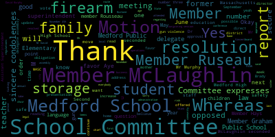
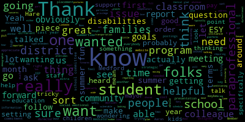
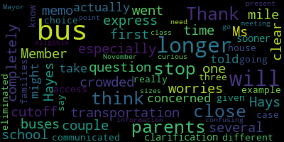

[SPEAKER_19]: Medford High School for its incredible staff and student body. This year has started at a great note and we are excited for the coming months and events that will take place. My peers and I are eager to speak about any problems in the school environment as well as start discussions for changes that are needed to improve the quality of our school. We hope to gain knowledge about important matters, and we are honored to be able to participate and attend the school committee meetings for this year. This is an amazing opportunity for us, and we hope to get as much out of this experience as possible. Thank you.
[SPEAKER_03]: Thank you. If we could all please rise to salute the flag. I pledge allegiance to the flag of the United States of America. and to the Republic for which it stands, one nation, under God, indivisible, with liberty and justice for all.
[Lungo-Koehn]: Thank you. We have number three, good of the order. Member McLaughlin. Thank you.
[McLaughlin]: I just wanted to, for good of the order, since it's the first meeting of the month and we typically have it, last year we talked about setting some goals for a school committee. And I just want to think about, put it out to my colleagues about what we want those to be and when we can schedule a time to discuss what they will be.
[Lungo-Koehn]: We have number three, good of the order. Member McLaughlin. Thank you.
[McLaughlin]: I just wanted to, for good of the order, since it's the first meeting of the month and we typically have it, last year we talked about setting some goals for a school committee. And I just want to think about, read out to my colleagues about what those would be and how we can schedule a time to discuss what they will be.
[Lungo-Koehn]: We have number three, good of the order. Member McLaughlin.
[McLaughlin]: Third time's the charm. Thank you. I just wanted to, for good of the order, since it's the first meeting of the month and we have it, last year we talked about setting some goals.
[Lungo-Koehn]: We do have a good of the order, yeah. Okay. No. Yeah, just start.
[McLaughlin]: So again, I think everybody probably heard that a couple of times, but you know, so we want to set some goals. We had voted last year that we were going to set goals for school committee. And so I just wanted to put out to my colleagues, you know, that we don't want to wait another, I assume we don't want to wait another whole month for the next good of the order to discuss this. So maybe I'd like to make a motion that we set a time, some, you know, Committee of the Whole or something maybe this month to talk about setting goals.
[Lungo-Koehn]: Sure. Motion on the floor by Member McLaughlin, seconded by Member Mustone. All those in favor? All those opposed? Committee of the Whole will be scheduled in the next several weeks to discuss the good of the order and goals for the upcoming year. We have the consent agenda, bills and payrolls, special school committee meeting minutes June 13, 2022, and Committee of the Whole meeting minutes June 22, 2022. Is there a motion for approval?
[McLaughlin]: Motion to approve.
[Lungo-Koehn]: By Member McLaughlin, seconded by Member Ruseau. All those in favor? Aye. All those opposed? Paper passes. There are no reports of subcommittees. And number six, report of the superintendent. Number one is superintendent's updates and comments. Dr. Maurice-Edouard-Vincent, superintendent.
[Edouard-Vincent]: Good evening.
[Lungo-Koehn]: Good evening.
[Edouard-Vincent]: Yes. As we begin tonight, I would be remiss if I did not mention that yesterday was the 21st anniversary of the horrific September 11th terrorist attacks on our country. I know that everyone remembers where they were that day when that first plane hit the World Trade Center. Despite the unspeakable pain and loss, we will always feel at the deaths of over 2,900 people We also remember the sense of unity and service that was palpable during this time 21 years ago. Indeed, in our work, educating students who were not yet born on September 11th, we strive to continue that commitment to service and in the hope that there will be moments devoid of tragedy in which we will once again feel, at least to some degree, that sense of unity. To honor the memory of all those lost, I respectfully ask that we rise for a moment of silence to remember all those who perished and for all the public safety personnel who ran to help the victims that day. And sadly, I would also like to ask that we just take one additional moment of silence to honor the memory of Kyle Roust, a 2019 Medford High School graduate who lost his life in a tragic accident this summer.
[Lungo-Koehn]: Thank you.
[Edouard-Vincent]: Over the last several weeks, this is regards to the opening of school. The hallways and classrooms of our school buildings have once again been filled with students and staff, as together we once again embark upon a new school year. Administrators and first year educators arrived on campus the week of August 22nd, and our new staff were treated to an induction week. as well to help them get acclimated to the Mustang community. Induction week this year included a tour of the city of Medford, in which our new colleagues visited Tufts University, the Royal House, and the slave quarters, and the brand new Medford Library. After the library, the group was welcomed to Medford by Mayor Breanna Lungo-Koehn. There will be a more detailed report next week from Dr. Riccardelli. If the last few school years have taught us anything, it is that the partnerships we enjoy as a school are critically important to the execution of our mission. I would like to take this opportunity to recognize several different invaluable partnerships that make it possible for us to do this work. First, our most sincere thanks goes to our Members Plus Credit Union for providing 100 filled backpacks for our students, and to Wegmans for providing additional school supplies for our middle and high school students. Second, I would like to note the generous donations from Tufts University, Herb Chambers, Simple Fare, and East Cambridge Savings Bank. Because the networks night of 10,000 lights had a wonderful fundraiser at rights pawn this past Saturday evening, and due to generous donations of our partners that event was able to take place. I wanted to share, as we announced last week, that the Medford Public Schools has reached tentative agreements with three of our bargaining units, representing administrative assistants, carpenters and maintenance personnel, and school nurses. We are grateful to each of these groups for their commitment to the district, and we'll be submitting those tentative agreements to the school committee for your final approval in the coming days. In addition, as we announced last week, and with the unanimous support of the school committee, we have declared an impasse in our negotiations with the Medford Teachers Association in order so we may petition the Massachusetts Department of Labor Relations to assign a neutral mediator to assist toward a resolution on a successor agreement. These decisions will be discussed later in the agenda in our labor update. But to be clear, the declaration of an impasse in no way constitutes the district walking away from the bargaining table. It instead means we are looking to engage in this negotiation with the assistance of a mediator in the hope of expediting a resolution.
[Lungo-Koehn]: Do you have anything else to say, Mr. Gopnik? Thank you.
[Edouard-Vincent]: Finally, there are a few reminders and updates that reflect what a busy time of year this is for our Mustang community. Fall sports season is in full swing, and we wish all of our athletes well. Our Mustang football team began their season this past Friday against Arlington. We do encourage all community members to check out our sports schedule to support our student athletes. This week, Medford Special Education Parent Advisory Council hosts its first virtual meeting of the new year on Wednesday. Sunday, Mustang alum Dave McGilvery's inaugural Run Medford event will be held. CCSR and Power Kids were selected as beneficiaries of this race. On September 24th at Hormel Stadium, the Mustang Band will host and compete at the New England Band Competition.
[Lungo-Koehn]: And this year in Medford, we are opening with several new faces.
[Edouard-Vincent]: While there are very limited number of teaching positions and power positions that we still need to fill, we have successfully filled the vast majority of vacancies. As noted in one of my back to school bulletins, we are welcoming several new leaders into administrator roles. While we hope to have an opportunity to introduce you to several of these new faces in presentations in the coming weeks and months, I've asked our two newly minted school leaders to join us tonight. It is my pleasure to introduce Mr. Andrew O'Brien, friendly assistant principal at the Roberts Elementary School, who is now the principal of the McGlynn Elementary School. and Dr. Lori Hodgdon, who is now the principal of the Curtis Tufts High School. Lori most recently held the role of school director at the Collegiate Charter School of Law. At this time, I would like to ask Mr. Andy O'Brien and Dr. Lori Hodgdon to step forward so that they may be recognized.
[o9F0qYH9Geo_SPEAKER_05]: Thank you. Thank you. Those are my remarks.
[Lungo-Koehn]: Thank you, Doctor Edouard-Vincent. We have number two opening report on transportation operations. Mr. David Murphy, assistant superintendent of finance and operations.
[Gordon]: Thank you mayor, members of the school committee. Pleasure to be with you again. You had a wonderful summer. This first update is a very brief deck. We can just go to the one and only slide. As you know, and as the superintendent's back to school bulletins referenced several times, the beginning of school can be a bumpy period, particularly with respect to some of our operational areas, and that's certainly true in the area of transportation. The operations and transportation update to some degree are going to blend together because a lot of the operational challenges that we're facing currently at the beginning of this school year and historically at the beginning of every school year relate to transportation issues as well as school safety issues. So I will say that to summarize at a very high level, we've had a generally successful opening to school opening of school with respect to on the operational side that that certainly do in no small measure to staff members, teachers, paraprofessionals, custodians, administrative assistants, and everyone else in our various school communities who have helped us to get off to a pretty efficient and pretty smooth start. As referenced there in the slide, one of the priorities over the course of the summer, both for the Medford Public Schools, as well as the city of Medford, has been our ongoing and continuous communication and work with the Medford Police Department to make sure that All operational concerns with respect to student and staff safety are being prioritized first and foremost. Some of those are adjustments and things that we can speak publicly about. Others, as we've talked about in this forum many times before, are items that we wouldn't necessarily discuss in public. but I can commit to you that they are being prioritized in this work taking place in each school to make sure that safety is where it needs to be on our priority list. One of the ways in which we've tried to enhance safety is by taking a very close look at the traffic patterns surrounding each school. The traffic around our schools and our building administrators, particularly at the elementary level, joined Ms. Galuccio and myself at the Metro Police Department headquarters last spring when some of the traffic concerns were sort of boiling over in a variety of ways. And so we were able to put in some ad hoc solutions around schools, working with our traffic, or the police department's traffic supervisors to make sure that we were able to troubleshoot some of those areas. before the close of school last year, but we had all sort of left those meetings knowing that there were more things that we were gonna have to do surrounding each school to make sure that dismissal in particular, for a variety of logistical reasons, student drop-off at the moment is not a huge concern. I recognize that there's some significant traffic issues surrounding the high school. Those issues, frankly, are not all pertaining to the high school, that's the area around the high school is seeing some significant construction work. And so some of the slowdowns that families and students have experienced during the drop-off at the high school, they really don't have anything to do. We haven't put in any changed protocols related to the high school on drop-off. Pickup, on the other hand, at a few schools has been a challenge in terms of the traffic and the congestion. And we've installed speed bumps at the high school, which I know we've received some feedback on, which we always appreciate, as well as some various traffic strategies that we've put into place there. Overall, we are, from the administration's perspective, pretty pleased with how the first couple weeks of school have gone. The parking lot at the high school is clearing out. approximately 12 minutes, on average, 12 minutes faster than it was previously. And that's with traffic having been slowed down due to the speed bumps that were installed. So I think our decision to move the primary student pickup area over to the West Courtyard Loop is, from our perspective, success, and that we think we've been able to improve safety. Before I move on to the personnel issue, which will also be a brief update, are there any questions either on the transportation or general operational front? Putting the human resources staffing questions to the side for a second, and I will be happy to answer those as well.
[Lungo-Koehn]: Member McLaughlin and then Member Hays. Thanks for that update.
[McLaughlin]: And I'm wondering how families are able to let staff or folks know what transportation issues they're having. So for example, if there is an issue with the bus, or if there's an issue with being 40 minutes in the line to get into the school because of the traffic remediation issues that we're having, particularly at the high school right now, what's the process for people to let folks know at Central? One, and then the second is, I'm hearing some qualitative information around folks who are saying that they're being marked hardy and want to know what folks can do for that if that happens. I'm sure it's probably miscommunication or something along the lines, but just how can people address that too?
[Gordon]: Sure. Thank you for those questions, Ms. McLaughlin. I think my first response cuts across both questions, and that is families and caretakers should reach out to their school principal school principal, particularly with some of these matters and sort of the normal rough and tumble of the opening of school school principal, and in the case the high school perhaps the assistant principal working closely with the house. is gonna be the first line of defense in terms of being able to troubleshoot some of those issues, particularly with respect to students being marked tardy, because as a sort of general guideline, I don't wanna say that students aren't marked tardy, because that's not something I would want, no offense to our student reps, I'm sure you're all on time every day, but it's not necessarily something that we would officially endorse or condone, but as a general guideline, even without some of the traffic issues that we've had, The expectation is that we're somewhat lenient in the first week or two of school. It's not uncommon to find individuals who have just found their way to the high school for the first time, wandering around various hallways, and they're significantly removed from where they're supposed to be, and it's not through no intention on their part. With regard to questions specific to transportation, if it's a specialized transportation issue, I would start with the Office of Student Services with Ms. Bowen and her team. because there are just a few nuances with respect to how we operationalize the specialized transportation issues and services rather. If it's a non-specialized transportation, then I would start with the Office of Family and Community Engagement. And Ms. Fidler-Carey has an email address that's available on the website that funnels all those questions through. And then we go through and make sure that there's a staff member assigned to address each one.
[McLaughlin]: Can I just follow up on that? Thank you. Thank you. So I'm wondering if it's on the website too, just in terms of like explicitly around transportation issues that folks know. Thank you. That's helpful that folks know who to contact and how. And so I'm also thinking about instances where we have, you know, students who are out of district, if it's a non-school day in Medford, but it's a school day in the district that they're in, how are we addressing, you know, that, especially if it's, you know, 7 45 in the morning, you know, folks aren't, you know, is there a protocol that sort of, made aware to families either on the website or otherwise, and if there's not, can there be?
[Gordon]: Yeah, so thank you for that. And that is an issue, as I think we've talked about here before, that has come up and there have been some hiccups with before. We have put some protocols in place to make sure that the appropriate offices are reaching out to those families when there is some type of a change of some kind. I will double check that to make sure that that's as tight as we need it to be, because it's a protocol issue, but obviously the protocol is only as good as the execution of the protocol.
[Hays]: Thank you. Ms. Hayes? Member Hays? Thanks, I had a question about the the memo that went out about bus transportation and that buses are crowded and I had several parents express some worries about that, especially I think there were a couple who had to were in the school for the first time and who aren't completely clear about. the cutoff of the one mile and they're concerned that they might actually be told that they can no longer take the bus. So will there be a clarification of that sooner? How will that be communicated to parents if they are no longer going to access the bus?
[Gordon]: Thank you for that question. And I know this is a question that is on the minds of a lot of families. just to back up for a moment, in the superintendent's weekly communication last week, we notified families that due to an increase in ridership, and the ridership has increased significantly with respect to students who have registered to take the bus, that increase is concentrated primarily at the Brooks Elementary School and at the two middle schools. We're not seeing a disproportionate increase at the other schools at the moment. But in those two areas, we are going through to look at each bus stop to determine if there were bus stops that at the elementary school are within the one-mile radius that is our practice in Medford or at the middle school within the two-mile radius, then it is possible that within the next week or so, Ms. Fidler-Carey or the school administrator will have to contact the families of students at that bus stop and let them know that with advance notice, that bus stop will be discontinued. Again, that's within the two mile radius for the middle school and one mile radius at the elementary school. And a very, very important caveat to that is no bus stop is eliminated without a safety analysis happening first. And so if the walking route to school is within the radius, but there's a busy intersection or a Felsway or something along those lines that would prevent a student from being able to safely walk that route, then the stop will not be eliminated. There will be advanced notice between the time that that communication, I think incidentally, we're talking about a fairly limited number of bus stops. So I do not wanna give the impression that every bus stop under a mile, or every bus stop under two miles is going to be eliminated because, again, the bus stops that exist are typically there and should be there due to safety concerns. Those aren't going to be eliminated. But we do have isolated spots, again, particularly at the middle schools and at the Brooks, where stops have been created, probably shouldn't have been created, frankly, are within that radius and are considered a safe route. that determination, just to sort of anticipate the next question, a perfectly reasonable one, is made between the bus vendor, the Medford Public Schools, and the Medford Police Department. All three entities are consulted to determine whether or not that's a safe route. And at that point, that communication would be made to the families of students at that particular bus stop. Again, it's a limited number of bus stops that are going to be affected by this. I think any bus stop that is going to be affected will likely be notified before the end of this week. I'm sure Mr. Lucario will text me if my timeline is off on that, but I believe it'll be before the end of this week, and then there'll be a two-week lead time before we do a consolidation.
[Hays]: So I know, for example, in my case, I was given a choice of three different bus stops that were really close, all were close to my house. So when you say a bus stop is eliminated, those families are no longer eligible for the bus or they need to go to, I just think that could be confusing.
[Gordon]: If they're within the radius, it's the bus stop that gets eliminated, not the student. Typically, in your case, frankly, one analysis, and there's a variety of systems we're putting in place. We've just retained a new vendor, Transfinder, that will help us to be able to do this analysis in a slightly more sophisticated way. But if it's really the case that in the Hayes household, there are three bus stops in such close proximity that you would have no particular preference amongst those three, then I would say it's probably the case that one of those, at least one, could probably be eliminated. And that's the type of analysis. It is possible that we will go through, there will be stops eliminated, and very, very few families will be affected. I think it's very unlikely that no families will be affected, though.
[Lungo-Koehn]: Thank you, Mr. Murphy. Member Graham?
[Graham]: Do you anticipate any bus stops being eliminated that would be otherwise inside of our policy? within like a bus stop more than a mile away, more than two miles away being eliminated?
[Gordon]: I don't, I can't anticipate, I can't think of any circumstances under which that would happen. We're not looking to change in this moment at least, the practice of the one mile and two mile radius for the respective levels. So I can't think of a circumstance under which a stop beyond that radius would be eliminated. I will say that part of what's challenging here is that, and if you recall we talked we dealt with this a little bit at the beginning of last year when we were sort of trying to upgrade this systems approach to developing our bus stops. There are bus stops that have been created historically in Medford that probably shouldn't be there either because they're in close proximity to the school or they're transporting students to schools outside of that actual zone. And obviously I'm referring to the elementary schools. That is a practice that we are looking to reduce and then eventually eliminate. And I would anticipate that we'll be coming before the committee shortly with a policy recommendation related to intradistrict transportation for students who have received intradistrict transfers. So students who are going to an elementary school but not in that elementary school zone don't have any specialized transportation needs specifically identified but have historically for some reason been provided transportation. We've been sort of working on these on a case-by-case basis over the course of the last year and In part, because when we came before you with a policy recommendation, it was our hope to have as few families as possible negatively affected by what we hope will be the new policy. And I think thanks to the work of primarily Ms. Fidler-Carey, we're in a better place now to bring that recommendation before you. And I would anticipate we'll be doing so relatively soon.
[Graham]: contract is up at the end of the school year, is that correct?
[Gordon]: Yes, it is.
[Graham]: Okay. So I think we've talked a number of times about whether one mile and two mile, particularly the two mile radius issue is the right radius for our students. And I would submit the traffic going into Medford High in the morning, maybe as an indicator that buses might help, but just try to think through when does the committee need to provide guidance to all of you about what changes if any should be made so that they can go into an RFP so that they can be posted because we were not given that opportunity the last time around and this was before your time. We were just told here's the contract and we got to sign it. I think there probably are transportation considerations that we should think about before the RFP goes out. I just don't know what the right timing is for us to have that conversation.
[Gordon]: I would say not the end of the year is my first response. retention of the TransFinder vendor is in part so we can provide a data-based analysis to determine if you were to change that policy, what would the implications of it be? Now, it's always fluid, obviously, because sometimes there are more students in one area than another, and there are some challenges that stem from our current zoning of elementary schools. That is an issue that's obviously well beyond the scope of the transportation consideration, but it is my hope that through TransFinder and the TransFinder expertise that Ms. Fidler-Curry is accumulating, that we'll be able to provide some more data-based recommendations to you. when that time comes up, which I would hope that we would be having that conversation, I'm gonna say in the fall, but by the fall, I mean before December, I definitely do not mean the next couple of weeks.
[Lungo-Koehn]: Okay, thank you.
[Gordon]: Thank you.
[Lungo-Koehn]: Member Ruseau.
[Ruseau]: Thank you. You said that just now that the transportation and the zoning of the schools, I don't remember your exact words, but I just wanna be sure that we do not get in a situation where sign a contract, a year later we decide to rezone, and we are limited because we have a contract for the bus. Now I've not been a part of a school system where the rezoning happened and how that would impact busing, but I can't imagine it doesn't impact busing, so I want to make sure that if we do pick up the incredibly hot potato of rezoning, we're not throwing ourselves into this fire and then really being stuck because of how we decided our bus contract. So are those things truly a separate
[Gordon]: Well, so what I said was that when we bring forth analysis on the transportation, based on the transportation data, so that we can decide on routes and what we want to put into an RFP, that there may be some existing challenges that stem from our current zone situation. that is going to be beyond the scope of our considerations with respect to transportation. I think I fully agree with the sort of underlying point that you're making, which is that our zoning system should not be dictated by a vendor agreement with our transportation. And I think the way that we guard against that is just making sure that the RFP affords sufficient flexibility to make sure that we are receiving the service that we need, irrespective of whether whatever other decisions the school committee makes with regard to zoning. Last point very quickly though, is that any changes to zoning, which, as you know, we're not discussing tonight, but is something that is, as you called it a hot potato, but it's certainly that, and it's also one that's very consequential for a district. So much so that it is not uncommon for when changes are made in a district of this size for there to be a lead time with respect to implementation. And it wouldn't shock me, frankly, if the lead time actually exceeded the length of what is typically a three-year contract. So that may be one way in which we sort of are able to separate the two issues. But generally speaking, I would say a vendor agreement can't hamper our ability to provide service to students. And zoning is one of the ways in which we provide service to students.
[SPEAKER_20]: Thank you.
[Lungo-Koehn]: Thank you, Mr. Murphy.
[Gordon]: I thought miss it did you have one more 5 transition follow-up.
[Lungo-Koehn]: May from the chair just one question of course I know it talked about changing routes. I saw one request come in for an additional route to how many requests do we have for additional routes.
[Gordon]: I don't know the specific number of additional routes, but I would say that our primary bus vendor of Eastern Bus is experiencing the same challenges that we are as an organization with respect to workforce depletion. And so at the moment, the prospect of additional routes, I would say, is pretty slim. There are a lot of requests that come in. essentially good faith questions and requests that we do our best to accommodate. But our responsibility is to make sure that the system as a whole works and we accommodate whatever individual requests that we can. I can try to get some specific numbers in terms of if we have any data to suggest that there's sort of a demand that's not being met. But generally speaking, I would say at the moment, meeting more demand than we really have capacity to meet, which is why we're talking about the potential initial stops. Okay.
[SPEAKER_03]: Thank you.
[Gordon]: And if Megan is watching, feel free to correct me and I'll try to do, I'll try to correct myself before the end of the meeting.
[Lungo-Koehn]: So, um, with that, uh, yeah, number three report on personnel, Mr. David Murphy.
[Gordon]: Oh, I'm sorry. I thought I jumped at personnel. Um, we have, uh, We worked hard over the summer to fill as many of the personal vacancies as possible. Our administrator ranks are now fully staffed with the elevation of some teacher leadership roles, including our new coordinator of world languages. and coordinators of performing arts and fine arts and I believe will be similar as we did the school leaders this evening, introducing those individuals to you in the coming weeks and with respect to teacher and paraprofessional roles we have seven teaching positions for which we're looking for either permanent appointments or long-term substitutes. I believe the breakdown is three permanent positions of late summer resignations and four long-term substitute positions at various schools that we're looking to fill. We are, as we were last year, facing a significant challenge with respect to our paraprofessional staffing. It is comparable to the situation that we had last year around somewhere between 15 and 17 vacancies across all schools. And that's obviously a significant issue that is not uncommon. Other districts are facing, it seems, challenges of similar scale, but definitely something that needs to be addressed in the coming days.
[Lungo-Koehn]: 7 positions open full-time now 15 to 17 last last year.
[Gordon]: 1517 paraprofessionals this year 7 teaching positions okay. Of the 7 teaching positions are just be there for our positions that would be filled with a lot of substitutes.
[Lungo-Koehn]: And the question I do. I did again thank you.
[McLaughlin]: Obviously the paraprofessional issue is very concerning. I know that you and I have talked about this a number of times as well, and I'm mentioning it here publicly because I think folks know that it's an issue as well. So it was brought to my attention earlier today that even postings for the paraprofessionals, if we could just go across all platforms and any platforms that are out there for postings, and I know every district is sort of looking, but The CPAC sort of alerted us tonight that there's not postings in different job listings. So I know a lot of folks go to SchoolSpring, and I forget the other ones, some of the other ones that are more popular for the world of education. But if we're really trying to cast a wide net, if we're going to places like idealist.org, LinkedIn and I mean not LinkedIn, Indeed and some other places, just to make sure that we're casting as wide a net as possible. I'm very concerned about the obvious potential legal ramifications, especially when there are students requiring paraprofessionals on a one-to-one basis in their classroom. And I know if maybe through the chair or through the superintendent, if the Director of Pupil Services wants to address that at all, just for public consumption, that would be really helpful in terms of how that's happening, because I'm getting a lot of questions particular to that. So I'm also thinking about our therapeutic learning program in classrooms, a lot of those specifically, we talk a lot about our most vulnerable students, and they're also our most vulnerable teachers and paraprofessionals in those classrooms. So how are we really working to remediate? And I know in some instances, Central's going into the classrooms, which I'm sure that's an extra burden on everybody as well. So how can we help? How can we help spread the word? What can we do to get extra help in there? And also, you know, I'm sure that we're meeting legal requirement, but just if you let folks know what that is and what that looks like, it'd be helpful. Thank you.
[O'Connor]: So at this time, we're doing the best we can to fill the power positions. We are expanding to different platforms to see if we can get more candidates. We've also created flyers that we're putting up in the library, grocery stores, restaurants, to see we have gotten candidates from those flyers. We continue to try to meet every student's needs. We are extremely short staff, so If there is an area that we're not able to be compliant in, we would look at what compensatory services would be for those families. And that would be at a team meeting that would, it would be discussed. But it's an ongoing recruitment that we're trying to get paraprofessionals in as quickly as possible. We were able to hire one or two in the past two weeks, but it's slow. We're working as hard as we can and we're trying to expand it to as many people as possible to help us out. So if you know anyone that's looking for a position, you know, tell them to, you know, send their resume my way, but we are going to expand the platforms as well.
[McLaughlin]: Can I follow up? Thank you. Can I follow up there? Thank you. Just to follow up to that, thank you, Ms. Bowen, and appreciate that. And obviously, if families have concerns, they can reach out to their ETL at the school, letting them know if there's concerns specifically around paraprofessional coverage. But obviously, with one-to-one, for compensatory, I know you're talking probably speech, OT, that sort of thing. you can't do compensatory for one-to-one in a classroom, so you obviously have to.
[O'Connor]: So we would have to have a team meeting to discuss what the specifics would look like. So if it's a student that needs a one-to-one in math, we may offer some sort of tutoring services after school or something like that. So it's taking each individual case, case by case, and seeing what the services that we're missing and how we can provide that to them.
[McLaughlin]: Okay, because I know some IEPs have one-to-one for the students specifically, and sometimes with the shortage, if there's a if there's a paraprofessional in the classroom and they're assigned to a student one-to-one, but they can also be acting as a classroom paraprofessional. So then it's two roles that they're trying to fill. And obviously if the IEP is requiring them to fill one, it's sort of tricky. It is very tricky. It is really tricky. I know. And so I want to make sure that everyone's aware of how tricky this is because we really, really, really, you know, need people to help support us in these situations and to figure out what we need to do. And then do we do exit interviews at all? with folks like that if people are, if we have high attrition with our paras, are we doing any exit interviews?
[Gordon]: We certainly, we try to, but I can't say that it's 100% because people leave with various timelines and their various circumstances. So as a general rule, I think it's a good practice. Yeah. If I could just follow up quickly on the platform issue. It's the administration's policy to use every platform available to us particularly for some of these positions where there's both high turnover and high demand and high volume. So I don't, I am familiar with the email that you've referenced and it is something that I've asked my staff to follow up on to see if sometimes there are postings that expire and if we don't catch them, then we need to renew them. But it's as a general rule, the postings are up across a variety of platforms. And again, for the situation with respect to the Paris, that's necessary because we obviously need to cast as wide of a net as possible.
[SPEAKER_10]: Yep.
[Gordon]: I wouldn't mind finishing the report, but after that,
[Lungo-Koehn]: it will.
[Gordon]: So really. It's it's good to see you guys. Were there any questions related to the vacancies or with respect to I think we left off of the teacher and power positions.
[Ruseau]: Member Ruseau are any of the. You know off the top of your head that the teacher positions that are open. I mean, you know, like if we have one calculus teacher and we don't have calculus.
[Gordon]: So they're all, they're non classroom, uh, traditional classroom teaching roles, but they are all, uh, high, uh, most vulnerable student supporting positions. So they're all, uh, high priorities to face. It's not, so it also means that there's more flexibility sometimes with respect to how we make sure those services and support are rendered. But, um, They are all in that job category. Thank you. Sure. You should be careful standing next to me. It's a dangerous place.
[Lungo-Koehn]: Just to clarify. Name and address for the record, and then please.
[SPEAKER_14]: Gina Coppola, president of paraprofessionals, instructional tutors, OTAs, PTAs, kindergarten assistant, and anything else that comes under assistant. Nice to see you all. I just want to clarify for the record. The reason why we have the shortage is, as you know, it's the money. And a lot of cities and towns have poached, should I say that word, our brightest and best, okay? And I had the mayor of Somerville say to me, we're so glad that you trained them. We know how Medford trains paraprofessionals so good, but we're taking them one by one. That's what I was told by phone call, by the way. So I wanna say that, yes, Ms. McLaughlin, there is a couple of paras, which I will talk to Ms. Bowen about tomorrow, that are doing sixth, seventh, and eighth, and that's impossible. If you have a teacher that's in seventh grade, oh, excuse me, I have to leave for eighth grade. Sorry if Tommy's not feeling well. You see what I'm saying? That's unheard of. And we can't possibly have that anymore. Not for $17,300. Thank you.
[SPEAKER_10]: I appreciate, Dr. Vincent, I appreciate you.
[SPEAKER_14]: I appreciate you too, David. I appreciate everybody, but I grew up here as an immigrant. My father made all the playgrounds for free. He didn't take his construction company, did not take a dime. I'm giving back whatever I can. I'm working for nothing, only because I can, okay? But these women, I feel so bad. I mean, I had to loan somebody $500. It's like breaks my heart, you know? I bring food, I have to bring food, I have to bring diapers, I have to bring this, I have to bring that. Sometimes I'm so tired myself, I'm beat today, I really am, because a couple of people have COVID and I covered three or four of their classrooms. But then who lost out? You know, some kids did lose out, because I had to help. So the thing is, is that we need, you want highly qualified, you must pay. highly qualified. I beg you, love and light to all of you. I really want a peaceful table. I really do. This cannot be a fight. We love people. We want to go in, we want to work, but give us a little bit more. That's all we're asking.
[SPEAKER_10]: I appreciate you all. Thank you for listening.
[SPEAKER_14]: Thank you for bringing it up. I really do appreciate you, that you asked for us to see where this employment is going. I had 120 members, I have 74. Thank you.
[McLaughlin]: Our kids need you. Our kids need you. Yeah, our kids need you. Your kids are losing. I know. And thank you.
[Lungo-Koehn]: We appreciate you. Thank you.
[SPEAKER_14]: Thank you all. Thank you for listening.
[Lungo-Koehn]: We have next up, number four, Labor Update, Mr. David Murphy, Assistant Superintendent of Finance and Operations. Mr. Murphy.
[Gordon]: Thank you, Mayor. So a closely related topic to what we were just discussing with respect to personnel is our ongoing negotiations over successor collective bargaining agreements. And you'll recognize the slide before you today with a few modifications from the last time in the spring when we updated U.S. with respect to our ongoing negotiations. Several units obviously are still in the midst of negotiations and we'll talk a little bit more about the teachers with respect to the school committee's declaration of impasse momentarily, but as the superintendent said in her opening remarks and as we announced on Friday, The district has entered tentative agreements with three of our units, our carpenters and maintenance unit, our administrative assistance unit, as well as our school nurses unit, who I'm happy to say ratified that TA earlier this afternoon. So this is obviously progress and we're happy that we're able to move forward. The district's bargaining priorities and objectives have been the same since we first started discussing successor agreements last year. I will say, just to be candid, at the last time that I provided this information to you, you may recall that one of the members made a motion to make the district's proposals public at that time. I was grateful that the mayor gave me the opportunity to speak before that motion was voted on. And I asked you at the time to not direct us to do that because where we were in the course of the negotiations, I did not think that that would be a prudent or strategic move. That was not, frankly, because as you'll see this evening, there was anything that the district felt that we had to hide with respect to our negotiations. In part, many of our proposals can be inferred from our budget process, and we've been very open with respect to the goals that we are that we are looking to advance in the district. Unfortunately, how the way that some of the negotiations have progressed since that time. the consensus amongst our team, and I'm grateful to have the unanimous support of the committee, those variables have changed significantly. And at this point, for purposes of making sure that these negotiations do not, any more than they already have, disrupt our operations as a school district, we did feel the need to present a number of items tonight publicly. Before moving into that, though, with respect to the tentative agreements with these three units that have completed success to our TAs in the course of the last week, these are modest reforms. I want to be very clear about that. I want to be also clear that our As is the case with all of our bargaining units, all the bargaining units, those that we're negotiating with, those that we're at impasse with, and those that we've recently reached deals with, are all comprised of individuals that are spending day in and day out serving the Medford community. and when the district feels as though there's something that we need to change it is because we feel as though there may be a practice that could serve the interests of students better than the current agreements would allow it is not because we have any reservation or hesitation with respect to the the dedication or the commitment of the individuals who are in these units. With respect to those modest, they're listed here, but generally speaking, the compensation agreements follow a 2% cost of living adjustment. As is always the case, that does not mean that it is 2% all in. There are either modest longevity changes or modest step changes or things of that nature, but the cost of living increase across these agreements was within the budgetary confines that we had discussed last spring. And on the reform side, the new administrative assistant agreement includes a new performance evaluation instrument, which was something that the district prioritized. And I will say that the bargaining was exceedingly constructive and collaborative with us as we went back and forth as to what would be a fair way of implementing that type of instrument on some of our non-licensed personnel. With respect, on the school nurses side, we are, for the first time as I understand it, certainly first time in this agreement, recognizing the National Board Certification as a basis for lane movement, which in discussing this contract with both our previous health services director as well as our current health services director, Ms. Hines, we felt as though that was a credential that would be reflective of increased capacity to support and serve students in a school environment. So we're very very happy about that. Dr. Edouard-Vincent said it earlier, but these TAs will be going to you for your approval within the next week. Again, I've already given you a sort of a high-level summary, but I would just say in closing with respect to the TAs that these are all within the budgetary confines and the objectives that we had set out all the way back in June of 2021. when the contracts were coming due and we were getting ready to move forward with those negotiations. You heard me say a lot in the spring that there's sort of no way to talk about negotiations without talking about the budget, and there's no way of talking about the budget without talking about negotiations. And so just as sort of a refresher, we're operating with about a $69.3 million operating budget this year, the vast majority of which comes from our local contribution from the city of Medford. and then a smaller portion from our Chapter 70 allocation, that's being the state allocation that comes from, through the state's allocation and through, excuse me, and through the taxpayers from across the Commonwealth of Massachusetts. There are external funds that supplement that for various causes, but generally speaking, when we talk about our operating budget, We're looking at just below $69.3 million. We had said in the course of the budget that you approved in June that we were projecting for a 2% cost of living increase. As I said in the TAs thus far, we've been able to stay within those parameters. It's also what was allocated to non-unit managerial staff at the beginning of the fiscal year. a 2% across the board, meaning all units and non-unit personnel. We generally estimate to be about a million dollars. I'm going to walk through some of the specifics of our negotiations with the Medford Teachers Association. I'm well aware that many representatives from the MTA are here. this evening. I also just want to say up front, I know that there will be, I suspect, a bullet point or two that some of our guests will not agree with. And I certainly appreciate that. It's my responsibility, frankly, to articulate the district's position. and when we're in a difficult position as we are right now, from a labor perspective, I don't think it is helpful to not identify what those areas of disagreement are. So I'm gonna ask for the opportunity to walk through that. So with respect to a timeline, the negotiations team has met 17 times. This is not, I just wanna be clear, this is not a criticism, but it was the MTA negotiating team did ask to not meet during the previous summers. Again, it's not... That's not something that the district objected to, but with respect to the timeline, which I know has absorbed a lot of conversation and has garnered a lot of attention, that was a decision that was made at that time. There were approximately 14 issues that have been discussed at the negotiating table. I understand, given what appears to be some of the animosity that's been generated, particularly recently, I think it would be reasonable for folks to infer that there's tremendous disagreement over a variety of very significant issues. I'm actually happy to report, and I'd like to think that that sentiment would be shared, that on the vast majority of issues, there was mutual engagement by both parties, and either tentative agreements were reached, or we've exchanged proposals with identical language, which Whether you have a lot of bargaining experience or not, one could infer that that means we're close to a tentative agreement if the parties continue to give each other pieces of paper that say the same thing on them. At least in my experience, that's been the case. Also not uncommon, most of the issues that were raised were raised by the union. The district responded to each issue that was raised and attempted to engage meaningfully. I will say that there were a number of issues that were raised by the union that I do think have underlying benefits that directly serve students, and I think the union should be commended for that. It's not the case, frankly, in every district, and it's not the case in every negotiation. And so part of the reason that we were able to engage as constructively as we did was because there were a lot of really valid and good points that were raised. And we attempted to respond in good faith and make sure that, ultimately, the language that changed in the contract changed in a way that would advance the actual mission of the organization and not just serve the interests of adults. And so I do want to credit the association for bringing forth a number of those issues. And I want to say clearly that the district engaged on those issues and got to a point that, as I said, either there was a tentative agreement reached or we were exchanging identical language, which would at least lead me to believe that we were close to an agreement. There have been a few issues that have been discussed publicly, not by the district at this point. But I just a clarifying point that it became apparent to us as we saw some of the communications that were. circulating around the district is that all substantive proposals for any type of reforms that the district was prioritizing, we communicated as early as last spring a willingness to withdraw those proposals. And so it is not the case that all parties received exactly what they want based on their initial proposals. And there are a couple of issues that the union has prioritized that while the district did engage and made counter proposals on, we've reached a point where we don't necessarily believe at this point that there's room in this negotiation to change the current contractual language on. All of those issues, and particularly the ones that the elementary prep time that I know has been spoken frequently about publicly in this forum, that issue has been withdrawn. As far as the district's concerned, it's no longer being negotiated. And so I recognize that there are some qualifiers there, but if you see that last bullet point, from the district's perspective, and I can only speak from the district's perspective, this negotiation, the scope of this negotiation is now narrowed. to financial issues. And those financial issues, for some of the reasons that we're going to talk about tonight, and I think the ones that are for reasons that are very clear, particularly to the people whose income is being affected by those issues, those are very serious issues, and they're very real issues. And no matter how steadfast our disagreement might be with respect to what's responsible budgeting and what's responsible negotiating, I don't want to do anything to suggest that we diminish the consequence or the impact of what we're negotiating. And certainly, for some of our other bargaining units, as Ms. Coppola just shared with us, it's both a real impact on our employees, and it's a real impact on our ability to function as an organization. With that said, I do need to walk through the proposals that have been exchanged because I don't believe that we can have appropriate context for where we are now without understanding how these negotiations have progressed. And I will say just as we go to the next slide, if I had to identify an objective for this presentation tonight, it is definitely not for everyone to agree that what the district is offering is good and is fair, and that everyone should just come to the table and sign on the dotted line. That's not the point of the message that the district has been circulating over the course of the last week since the declaration of the impasse, and it's not my objective tonight. However, I do believe that in looking at what the district has proposed in the context in which we've proposed it, It is unreasonable to say that these proposals are inherently disrespectful. And I think it is even more problematic to say that that is their intent. Because for those of us who do this side of the work, which if you haven't pieced together is not necessarily the most enjoyable part of the work. The idea that we would do this with some type of latent intent or explicit intent to disrespect people or to not treat them with the dignity that we think educators should be afforded is far removed from reality. And I think that the employees of the organization and the members of the Medford community have a a right to know where the district administration stands. And I think they, at this point, have a right to hear directly from us, which is why we're presenting this to you and why we're soliciting the support of a mediator to try to move this forward so we can mercifully move on from this topic and start focusing on the actual work of the Medford Public Schools. The union's initial wage proposal was for a 6% increase per year, 18% over three years. There were other compensation components to that, but that was certainly the centerpiece of that. The rationale provided and has been provided publicly so that I'm not I'm not speaking on their behalf, and they can certainly do that on their own, was due to the pronounced inflation that is affecting the country as well as the Medford area, as well as the significant hardship that all educators have endured during the COVID disruption. I'll touch upon both of those points, the inflation argument as well as the COVID argument momentarily. But before we get to that, I need to say publicly what I've communicated to the union, which is that a school district in Massachusetts with a 2.5% cap on the aggregate income property taxes and the revenue that can be raised cannot afford anything close to 18% over three years. I to be clear, this is an initial proposal and I don't I don't believe that anyone felt that they were going to receive an 18% increase over three years. However, because of that proposal that was made in January, the district was faced with two choices. we could make a proposal that was very, very low to give us the room to negotiate, to get into the vicinity of where we knew we could sustain based on our budget. But by giving that low proposal, it was inevitable that it would seem disrespectful. The second choice was to make a proposal that was in the vicinity of what we could responsibly afford, and then be in a position where we were boxed in and could only make minuscule or incremental movement from the point of that proposal, and then be accused of being disrespectful because our movement was so slow. This was communicated multiple times in multiple forms. After two months, the district made a wage proposal in the hope of moving the discourse forward. That proposal was 2%, one and three quarters percent, one and a half, which as I said, is very low. But on March 29th, which I believe was the date that we made that proposal, and perhaps March 27th, it was the last week of March, we felt at that point that that was our only option to try to move the conversation forward. We also, in that proposal and in every compensation proposal since, offered to use the grant funding that was available to us to supplement that pay, provided that that supplement was not incorporated into the base pay. That's been the district's position from the very beginning, that while the grant funding is temporary, and will not exist in a short period of time. given our prioritization of valuing our staff, respecting our staff, and recognizing the difficulty that our staff has gone through, particularly over the last couple of years, that it is an appropriate use of that funding. There are some logistical hurdles, frankly, to using that money, and that's something that we've tried to work through, and we've tried to be as transparent as possible with respect to those proposals. From the time that we made that proposal, through today, they have been, in our view, in our team's view, mischaracterized as an attempt to shortchange our teachers. And I sincerely regret that that is the impression that has been made, but it is, in my view, disconnected from both what we have done at the bargaining table as well as what our intentions have been. And if we go to the next slide. As I said, the 18% proposal was an initial proposal. And as we said in our statement last week, the current divide is between a 7.25% proposal that the district has made and a 10% proposal that is on the table from the union. The 7.25% proposal does not include that supplemental pay made possible through the COVID-related grants. that we are attempting and have been attempting for several months to provide to our teachers. If factored in cumulatively, that would have the real feel of approximately 9.1% increase over a three-year period for all teachers. It would be the 7.25% divided by 2.5, 2.25, 2.5, and the $1,000 per teacher per year for three years, with, again, that supplemental pay not being incorporated into the base for the reasons that I referenced earlier with respect to the city's capacity. On June 6, the union made a presentation before you, similar to what I'm doing this evening. I believe that was the date that I asked you not to make me do this publicly. And that didn't work out. So now I'm doing this publicly. And in that presentation, the union presented an analysis. If we could go to the next slide. The union presented an analysis that we could absorb as a district in our operating budget a 2.25% increase. Now, again, as I said before, we had budgeted 2%, and frankly, the difference between 2% and 2 1⁄4 when we're dealing with a $69 million budget is relative, I would say. It's not, frankly, an analysis that the district deeply disagrees with. As I said, right now, our proposal is 2 1⁄2, 2 1⁄4, 2 1⁄2. So to be clear, we do not disagree with the MTA's analysis of our operating budget capacity. Where we do disagree and where we think the facts do not support the arguments that were made on June 6th is the idea that the ESSER money, meaning the temporary grants allocated to the district for purposes of responding to the COVID-19 pandemic, can be used to somehow bridge a gap between this contract and some future date where there is additional revenue. We disagree with that both because from a regulatory perspective, the guidance that we have received from the state and federal government would indicate that this would be an impermissible use of that funding, but also because it would create a structural deficit that may or may not be filled. Now, to be clear, there are different ways in which that structural deficit could be confronted. The taxes in the community could be raised. That could certainly raise sufficient revenue and expand the capacity such that an agreement similar to what the union is proposing could be a viable one in the future. But to that argument, I would say that I think it's a disservice to the community to enter into a contract that we know we can't afford and then tell the members of the community that we should raise their taxes in order to fund the agreement. That's backwards, frankly. And I would say, and again, I try not to reference this too often, but having sat in a chair very similar to yours, I can tell you that it is not an argument that a community typically responds well to. And I think understandably so. The other way in which that structural deficit could be confronted would be if there was additional revenue that came in from the state through increased allocation of Chapter 70. And as I take the union's presentation from that night, I believe that is what they are essentially predicting. And to be clear, they may be right about that. But similar to how it would be out of sequence to enter into an agreement that we know we don't have the capacity for locally, and then tell residents that they have to fund it. It would also seem unorthodox, at best, to enter into an agreement that we don't know with certainty is going to be funded by way of those state revenues. There is certainly the case that the state has committed in various ways to increase its chapter funding allocation. But as those of you who were here when the Student Opportunity Act passed, Medford is not necessarily a principal beneficiary of those increased revenues. And in addition to that, as I said at the beginning of the presentation, Our budget is comprised primarily of a local contribution. So an increase in Chapter 70 funding does not benefit the Medford community in a way that that analysis might carry more water in other communities that benefit more from the state's Chapter 70 formula. So to sum up, if we go back just one slide, Dr. Cushing, thanks. If we could summarize this disagreement, I hope one that we can have respectfully, it is the question of whether temporary grant funding can be used to increase base pay. It is the district's position that it both cannot be and that it should not be. But that is not to say that we don't have a responsibility to find a way to fund a competitive increase. We do. We do have that responsibility, which is why we have put on the table a seven and a quarter percent increase over three years. And then in addition to that, supplemented each teacher's pay with $1,000 per person per year through the COVID-related grants. On this slide, you can see these are all of the wage proposals that the district has made. And again, I think that it is certainly the case that every teacher, every community member has a right, as the union does, to say this is insufficient. And we're just not going to accept that. I think it is our professional responsibility and sort of common sense would say that we have to respect that. But I do believe that if we look at these numbers in this context, the suggestion that somehow this is an intentional ploy by the district to demonstrate disrespect, I think is an untenable position. And I would ask members of the community, as well as people in the organization, to make their own judgment about that as to exactly what intent or what motive the district would have to try to insult the people that are spending, hours every day trying to move the children of this community forward in their lives. I don't know why we would want to do that. And I think if we can't spell out our rationale, then perhaps there's a factual problem with that position. At the bottom here, just to make clear, these increases that we're proposing The 7.25% cost of living adjustment that would be incorporated into the base over three years, which exceeds the amounts for the previous three collective bargaining agreements in Medford, as well as the $1,000 supplemental pay per person per year. In addition to that, the district has proposed, and in some cases the district actually did propose, increasing compensation with respect to missed prep periods, with additional classes that are being taught, as well as longevity payments, which we were happy to offer counterproposals on. So again, why is it that we feel as though we now have to make this information public? because the rhetoric and the threat of job actions have gotten to a point where we are concerned that it could be disruptive to the organization. And it is our hope that through the use of the state mediator, we will increase the chances that we can get to an amicable resolution as quickly as possible. A couple of more slides, and then I'll be happy to take questions. To sum up, with respect to the inflation argument, Everyone in this room is being affected by inflation. And certainly, I don't mean to suggest that everyone in every income bracket is affected equally. That's certainly not true. But it is the case that inflation is a real problem, and it's having a real impact on people's lives. The question is, what organizations and at what level of government do we have the capacity to actually fix that? And the reality is the Medford Public Schools lacks the capacity to fix inflation. And it is why we have a responsibility to act within the capacity that we do have. And that capacity is limited by the 2.5% tax levy limitation that is imposed on all cities and towns. And it's limited by the local state allocation that I referenced earlier. With respect to the argument over COVID-19 and the hardship that educators and others have, if we could just go to the next slide, thank you. Again, just like inflation, that hardship is true, that has happened, and to be clear, it's going to continue to happen for the foreseeable future. Public school systems in all likelihood will be some of the final entities to no longer be feeling the effects of COVID-19 because we have a generation of students who have had a detrimental impact on their education in critical years. And so it is for that reason that while the primary purpose of this grant money that became available is to fund initiatives that can support students directly, it is definitely the case that there is a need to supplement the pay of educators because their work has materially changed. And that is why we're trying to use this funding and have been trying to use this funding to supplement that pay. We have a responsibility to the people that will be working in this community years from now and to the students that will be going to school years from now to not do so in a way that creates the types of structural deficits that will inevitably harm students. And to be clear, how they will harm students is that if we create a structural financial deficit that does not have an adequate response to offset it, It will be the positions that support high need learners that don't exist. And I recognize that there are constituents that don't like when we speak as directly about the possibility of not being able to retain as many jobs. And I know that there are some constituents that don't like when we talk about the direct impact we'll have on our most vulnerable learners. I hope, to those two constituencies, I am offending them in equal measure when I say, I don't know how else to do this job other than to tell you that if you enter into an agreement that you can't afford, the students who are most at risk, who are most vulnerable, who have the most needs, will be the ones who suffer. That is not an attempt to appeal to people's emotions. It is not an attempt to pull on people's heartstrings. It is an attempt to do the responsibility that this committee gave me over two years ago to analyze the district's finances and make clear to you when there are problems in the office. This would be a disaster. Finally, with respect to pay equity and to follow up on the points that Miss Coppola made earlier, The teachers collective bargaining agreement drives the budget of the Medford public schools. That's true for every school district. It is the primary driver because as you've heard me say before, we are an organization of people attempting to educate people. And so whatever agreement governs the most people, that's what's going to drive the budget. And so for us to enter into other agreements particularly ones in which there's a clear direction from the committee and a clear market forces, as Ms. Coppola alluded to, that would require us to look at potential increases that are disproportionate to what some of the other units are experiencing. It is problematic to do that with this variable being uncertain. And to be clear, this committee has been uniform in your commitment to increasing paraprofessional pay. There has not been an iota of objection from this administration to increase paraprofessional pay. Common sense would tell us we have to increase paraprofessional pay. We want to increase paraprofessional pay. But to be addressing that issue in a significant way, to be clear, we could give them a 2% raise. That wouldn't cause a problem. But no one wants that. And we don't want to do that. So if the question is why is that agreement still outstanding, it is because the primary driver of the Medford Public Schools operating budget is still uncertain. And when that's not uncertain, the paraprofessionals will be the first priority with respect to instituting greater pay equity in the district. Finally, questions about why did we, at this point, declare an impasse? I've referenced several of these points throughout this, so I'm just going to breeze through this as quickly as I can. But we did everything we could as a team to keep these negotiations confidential and to try to move the discourse forward. But when it got to a point when There were clear threats to disrupt the district's operations, multiple threats with respect to planned job actions. and repeated assertions that the district administration is somehow trying to disrespect our employees. We felt as though, excuse me, coupled with the fact that there wasn't anything left at the bargaining table, in our view, to negotiate other than the finances, we felt as though just continuing to sit across the table, or in this case, a Zoom screen, and stare at each other would have been a waste of, number one, everyone's time. and would have run the risk of delaying the competitive and sustainable wage increases that we'd like to institute. not feeling as though we had any better options, we asked you to declare an impasse. Again, I'm grateful to you for doing that. And it is our hope that through the help of a DLR assigned neutral mediator, we'll be able to expand all of our creative thinking and try to get to a place where we can resolve this as quickly as possible. And then just the very final slide there. Pay equity is a priority for us. It's something that we want to do. There is a limitation in Massachusetts with respect to what is a legally permissible job action. It is our hope and expectation that those boundaries will be respected. Temporary grant money. cannot and should not be used to increase base pay in the way that the union's June 6th presentation would suggest. And while, again, it's perfectly understandable for an individual in this context, given the inflation, given the COVID hardship, or whatever other reason to say that the 7.25% increase that the district has proposed, as well as the supplemental pay that gets it over 9% per member per year, is not acceptable. if every union, every individual has a right to an opinion on that. But when that is viewed in comparison to area school districts, when it's viewed in comparison to historical collective bargaining agreements in Medford, and when it's viewed against both the district and the union's analysis of our operating budget, I think the suggestion that it is somehow an intentional offense, I think lacks a factual basis. And it's for that reason that we felt as though all of this information needed to be presented to you publicly. And with that, I'm happy to take your questions.
[Lungo-Koehn]: Thank you, Mr. Murphy. May I have a point of privilege?
[McLaughlin]: Point of privilege, Member McLaughlin. I was just going to ask if there's any way that the air conditioning can be adjusted. It's freezing. I can just a little bit, if we can ask. Thank you. Thank you. Yeah.
[Lungo-Koehn]: Any questions from the committee? No. Thank you, Mr. Murphy. Thank you.
[SPEAKER_03]: Yes. Thank you very much. Thank you, Mr. Murphy.
[Reporter 1]: Thank you. Shelly Douglas, 414 High Street, Medford, Mass. So this evening I listened to Mr. Murphy, and I greatly appreciate the fact that he mentioned that we brought things to the table that we feel would benefit the students, which we clearly did. I also will be responding to the letter, and I'm not going to get into the details of everything, but I will be responding, the MTA will be responding too. some of the accusations that have been made here tonight, including the one that stated that the summer we said no to negotiations. I want to make it perfectly clear, and I have an email. Mr. Murphy and I, we were doing off-the-record proposals. And during those off-the-record proposals, we both agreed that the last off-the-record, Mr. Murphy, correct? Okay, do we not have off-the-record proposals, Mr. Murphy? Yes, yes. During those off-the-record proposals, well, they were in June. They were in June. They were in June. Correct? June 21st is summer, by the way. Anyways. In June, I stand corrected. In June, we had off the record proposals going back and forth. Mr. Murphy and I engaged in conversations going back and forth. Mr. Murphy and I were able to work through many things. During COVID, during many things, we worked together, okay? I don't know what happened, nor do I even wanna analyze what happens, okay? But I wanna say one thing. when you and I spoke at the very last author record proposal that you presented to me and to us, and I won't say what it was here, but you said, this is probably the best you're going to get, and it's a simple yes or no, and we will not agree to negotiate over the summit. If you could adjust the chair, Ms. Douglas. Okay, so it was either a simple yes or no, and we will agree to not negotiate over the summer. In my correspondence to him, I wrote that, and if it was wrong, then maybe he should have corrected me and said that we didn't have a mutual agreement because it was a no to the proposal, and as mutually agreed, we would not negotiate over the summer. That was a mutual agreement. I have that email. I can send it to you. I am tired. of being accused of saying things that I don't say. I don't want that happening. I do not. I have a responsibility as the president of this union. I represent 489 members. I'm not up here, it's not about me at all. It's about the members of this union. And they are here tonight. Last time, I never spoke. I let them speak. And as a body, we asked every single one of you to come to our negotiations. You continually choose not to do that. But I'm just gonna say, I'm gonna make a real quick point. So you continue not to do that. then you vote for an impasse. We do not believe we're impasse, but we will address that also. I'll let other people speak, but I'm going to be perfectly honest with you. I do not lie. I am very forthcoming and every one of you have known me for many years. And if you can show that I am a liar or that I put out the facts were there, what he said, exactly. We were looking at chapter 70 money. That's what we proposed. We did see the 2.2 in the budget. So whatever he said, that was my proposal. I have nothing to be ashamed of. That's exactly what I said. Thank you.
[Lungo-Koehn]: Thank you, Ms. Douglas. I just wanted to point out, I've been at the June session and the September bargaining session, and I know member Graham was present with me, vice chair, in June when we were representing the committee. So I just wanted to point that out.
[Gordon]: Thank you, mayor. I won't be... It was a bargaining session.
[Lungo-Koehn]: On June 21st, member Graham and I were present at the bargaining session.
[Gordon]: Yeah, I think I can clarify this. I mean, the proposal was... Thank you. The proposal was off the record. The bargaining session was a bargaining session. And as the mayor pointed out, the mayor and the vice chair were both present. The statement that no school committee members have attended negotiation session is inaccurate. I want to make very clear, it is not uncommon for the elected school committee to defer to their administrators and committee council with respect to negotiations. It's also inappropriate for the parties to be attempting to dictate who represents the other party. And the Department of Labor Relations, frankly, has been very clear on that. I said at the beginning, with respect to the summer, it was the union's decision not to meet over the summer. I also said at the beginning, the district didn't object to that. And the only reason I mentioned it tonight is because there's been a lot of concern and communication around how long this negotiation has taken. concerns and communication up until this point, as is the case for any communications about our bargaining, have not come from the district. And so I just want to be clear, I don't think Ms. Douglas makes intentional misrepresentations either. But with respect to the email exchange, I have a copy of it as well, and it's pretty clear, and I'd be more than happy to share that. Although again, I don't really see the point, because I don't really think that's what we're you know, who decided they didn't want to bargain over the summer. It doesn't really seem like a huge, huge factor at the moment, but that's just, that's just accurate. Again, I'll be happy to, I'm assuming that there are other individuals who would like to speak and I'd prefer to respond at the end if possible, but that will depend probably on what's said.
[Lungo-Koehn]: I think there's members in the audience and we have member Rousseau, member McLaughlin. would you like to speak? Yes. Member Ruseau.
[Ruseau]: Thank you. If you could bear with me and not take offense. This is a success story, a big success story. Okay. We are all here groveling over nickels and dimes. Massachusetts used to be the sixth heaviest tax state in 1980. We are now number 36. and what do taxes pay for public goods, public goods principally being public education. So the rich got exactly what they wanted us at each other's throats over the nickels that are left, okay? There is no school committee member here that doesn't think starting pay for a teacher shouldn't be six figures. There isn't. None of us ran for office to figure out how to screw teachers. Quite the opposite. I know I ran for office and I tried to get the MTAs endorsement because I really care about that teachers have anything and everything they could possibly ever need to do their job, because the teachers that my kids have had have been absolutely amazing. And, and I see some of them in the audience probably all of them. I get really upset because this feels a bit like us against them, when really the them are the rich people who figured out how to get us from number six to number 36 Massachusetts isn't like a state of poverty, where's all that money going, it's going into The usual communities start w some of them start with other letters but somehow w is very popular. So I just, I just think it's really important to to pause a bit because the other thing about the 1993 ed reform act was that school committees. sort of a joke on us. It really is a joke. We have all the responsibility to negotiate with you and no authority to do a damn thing about how much money we have to do that with. It's really kind of a sick, sick joke. And all school committees in Massachusetts have this same problem. I mean, I go to all the school committee conferences, ask my colleagues, I go to them all. And it's partially a therapy session because we're all suffering from the same problem where we have no capacity to raise revenues to do a damn thing. I ran for office because I wanted to implement K to 12 computer science curriculum that President Obama and Congress had done. but quickly realize, well, we don't have an extra four to $600,000 laying around for any of that to happen. So that's, you know, that's out the window. I mean, we're doing some stuff, but, so I just think that, I just want this to be clear. There's nobody in this room who is against anybody Prop two and a half was designed to make sure that communities like us do what we're doing, hating each other or whatever, maybe hate's a strong word, I don't know. Some days it feels that way. But in communities that really ran the prop two and a half thing to get it passed, they do overrides, some of them more than once a year, because they know they want stuff. They know that there's no way you can afford it with two and a half percent increases every year. And they knew that the people of their community, whether it's based on educational levels or income levels or demand and expectations of services, that they would just put an override every year, some of them twice a year, and poof, they would pass them and their taxes would go up a little bit and they could afford it. I don't envy any elected official, any teacher, and frankly, any resident of a regular community. And Medford, I think of as a regular community. So when we're talking about what we can afford, what we're really talking about is what rich people think we deserve. And let's be clear, they think we deserve an end to public education for full privatization, so there's even more rich people. And I'm just making sure this is all said, because frankly, prop two and a half is sort of like this boogeyman, nobody knows what it is exactly. And you don't have to learn what it is, but you do have to know why it is. It's there to make sure rich people don't have to pay taxes, and the rest of us are at each other's throat groveling over how to split the nickel. You can look at Medford's budget from before Prop two and a half, and we had, what was it, 150 people in DPW? We didn't get less roads between now and then, and we have what, 50, Mayor? 70, but 70, 150 down to 70. I mean, we've all driven on the roads. And when we talk about how to split the nickel, if we give, And I absolutely hate this next sentence, but if we give the teachers more than we can responsibly afford, meaning rich people think we should be able to afford, not what I think we should be able to afford, but based on the size of the pie, which can barely grow, if we give more than we can, then we're not gonna have to worry about the 15 to 17 pairs we have openings for, by the way, because we're gonna be getting rid of half of the pairs or whatever the number is. That terrifies me, frankly, more. So I just feel like as a body, we are often maligned, and I don't mean necessarily individually, but the notion that we can just pass wage increases and that there will be money coming is just not true. We do not have any taxation authority. We have no ability to rent out the buildings yet more. They're kind of always rented out and that doesn't give you much money. So I just really felt the need to kind of pontificate on why we're here, because I wish we were all getting together to talk about how can we improve this part of education and this part of education. Cause I know that the teachers all want that. And every member of the school committee ran for office for the exact same reason. Thank you.
[Lungo-Koehn]: Thank you. Thank you. Point of clarification that member McLaughlin, so you yield.
[Reporter 1]: The meeting that you spoke of with yourself and Jenny Graham, that was not a negotiations meeting. That was a meeting that you requested to speak with me. Dave, you wrote me an email asking to speak with me. The mayor wants to speak with me and Greg. There was negotiation. There was a meeting that was supposed to be between you, me, Greg, and I was obviously the superintendent. I would assume we're there. When we attended that meeting, it was just Greg and myself, and you were there, and you were there, you were there, Dave was there. I can't remember who else was there. Howard was there. There was no, may I finish please? There was no negotiation team. There was no negotiation team. at that time, and what was given was an off-the-record proposal. So there was no scheduled negotiations, and we did not say we were meeting to negotiate. You said you wanted to meet to talk with us. You did not say you wanted to meet to negotiate with us. If that was the case, the whole team would have been there, and they were not. It was myself and the MTA reg, Greg. Thank you. Clarification.
[SPEAKER_03]: Member McLaughlin.
[Lungo-Koehn]: Thank you. I just think if you want to, if you want to come to the microphone.
[Reporter 1]: I have emails for every communication that I have been the president of this union. I started in 2012. I have every single email from every communication with every superintendent, with every mayor categorized and done. So I would be glad to share anything. Thank you.
[Lungo-Koehn]: Member McLaughlin.
[McLaughlin]: Thank you. I neglected to say when I asked for the point of privilege for the air conditioning I didn't mean to interrupt. Mr. Murphy's end of presentation, and I wanted to say thank you for the presentation. I think the graphics in particular were very helpful and having a table for folks to see was very helpful. So thank you. I also wanted to thank through the mayor, my colleague, I echo many of his sentiments that he just shared regarding the position that we're in. And also just want to say that, you know, oftentimes to me, this feels like a dysfunctional family. I mean, some of what we're watching really I mean, the fighting and the bickering and the back and forth, it's kind of endless. And what do dysfunctional families or marriages or whatever you want to call them do when there are problems? They have counseling, I hope, to improve them. And that's what I see. No, I see the mediator. I don't see the impasse as a bad thing. I see the mediator as something that's obviously needed. We've had 17 meetings. and things are not moving forward. It's not a bad thing to bring a mediator in with someone with an objective outside point of view to be able to move things forward for all of us, for our community. So I just wanted to add that. Thank you.
[Lungo-Koehn]: Thank you, Member McLaughlin. Name and address of the record? Yes.
[Guion]: My name is Anthony Guinn, and I'm fond of saying I live at 489 Winthrop Street, room C209, but I actually live at 45 Emhill Avenue in Lemons to Mass. I've been on this negotiating team. I've been negotiating since the reopenings. That's when Ms. Douglas asked me, would you help with this? And I remember I was standing in line wearing a mask, one of the first times I had to do it at a store. And I thought, yeah, because I love this job and I love this school and it's in crisis and I gotta do it. There have been 17 meetings, and I've left some of them very angry, and I've left some of them very down, and my wife has heard a lot about it. But what I've done after every meeting, after I, you know, calm down as I look at my schedule and make sure there's time to show up to the next one, because there has been progress made. As has been stated here, there's been progress made. I didn't feel that the negotiations were insulting until I came to a negotiating meeting last Thursday, ready to go, after having done a member meeting, having a full day of teaching done, and planning my route back to Lemonster, because that's where I could afford to live. And I was greeted and told, oh, by the way, write an impasse. And that decision was not made that Thursday. That decision was made ahead of time. We could have been told, you could have reached out to us. I never heard, this is our last offer, if you don't take this, run an impasse. I didn't know, I was ready to keep going. I was ready to do this, and I was ready to have our first in-person negotiating meeting tomorrow. I was looking forward to it, because I thought maybe that's the barrier. Maybe we're all just sick of Zoom, and we stare at those computer screens, and it does terrible things to our minds. Because we can feel it after a long Zoom meeting. So I was excited and ready to go, and this is the first time I felt insulted, is that we weren't told ahead of time, and after all this time spent together, all of this work done, all of the progress we've made, that it's now decided we can't do it. And we've been through so much. We've gotten so much done. We're all doing it for the students. And I just wanna ask personally that you come back. And we try without the mediator. We try to get this done. There's been movement at every meeting. And I just want to give that a shot. Thank you.
[Lungo-Koehn]: if I could just address that. I've attended in June with member Graham, the meeting and the bargaining session, which was a couple of weeks ago, I believe. August 25th, thank you. I attended those because we were at a point where we really couldn't financially move any further. And I think the union pointed out in June the capacity for the city based on the budget analyzation was 2.25%. So Anthony, I hear you, but we have no more room to move. We have a bargaining with almost 20 other unions that all deserve increases. We are at an impasse. If we knew that when I was there on the 25th, if I knew we had already voted for that, we would have told you. We didn't, we didn't know that. There's no more room to move. We've moved higher than we can afford, is the truth.
[Guion]: I'd just like to say, I just really wish I knew that before I came into that meeting last Thursday and cleared that schedule. And someone knew. And someone had the ability to reach out and say, we believe we're at an impasse. Or the meeting before to say, this is our last best offer. We never got told that. We went to our members saying, we're going into another bargaining session today. We're still working at it. They thanked me. They talked to me all the time. I hear from different schools, different teachers, and all they do is thank us. And all they do is say, how do you do it? And I tell them because it's moving, because it's good, because it's the good work to do. So if that's where we are, that's where we are. As you say, if that's where you believe we are, but I just can't understand why we couldn't have known before. Thank you.
[SPEAKER_22]: Just name and address for the record, please. Kimberly Munyon, 126 North Street in Medford. Thank you, everybody, for allowing me to be here. I am solely here as a support for our teachers and educators. I am a generational Medford resident. I share the kindergarten teacher with my mother, aunts, uncles, cousins, you name it, we've been here. I was good school. I also have three students in the Metro public school system, seventh grade, fifth grade and first grade. I have developed relationships with many of the teachers in this room, along with any and other staff at the schools my kid attend. They show up for us in a way that has moved me. I cannot describe. I'm not here to argue with anybody. on this panel, that is not it. I would just really want the staff to understand that we do support them. We are absolutely on your side. I will cry, I apologize, because I feel this strongly about it and I hope that I can even reach a single parent a single supporter to get their feet in those doors and show the same support that our teachers deserve from you right now. The time spent volunteering, money out of their own pockets, at-home work, time away from their families, we cannot quantify that value that they provide to our children. I long for the days of the old MedFed where, you know, it's old MedFed versus new MedFed, if we're being honest, having the longevity of, and the consistency of the same educators and staff in the schools is invaluable. You had mentioned that word and that stuck out to me. They are invaluable. As far as the school committee not attending negotiations, that's not something I can wrap my head around. Time is our most valuable currency. And to not provide that to them is, I find appalling. Again, okay, I'm not here to argue. I just wanted to express my support to everybody in this room wearing red. Hi guys. Okay, so thank you for your time. I appreciate it. I don't know what else I can say. I have a voice. I'm willing and able to lend it. So here I am.
[Lungo-Koehn]: Thank you. Thank you.
[SPEAKER_20]: Greetings. Hi, Mike Wadness, I know some of you. I live in 7 Morse Lane, Natick, Mass. Yeah, I commute from Natick. It's not a short drive. It's not so bad though, about 35 minutes. But on my commute, I pass through about eight communities. All but one pay more than Medford. And five out of those eight pay about 10 to $20,000 more than Medford. I was at a gathering the other day and someone worked at another district and we were talking about the emotional woes that we're going through right now. And when I told them what our pay was, they laughed. They laughed. Our pay scale, is a joke. And yes, we could cherry pick and say, yeah, well, there are those W towns. Sure. And I don't expect Medford to be able to keep up with those W towns. I get that. I get that. But we can cherry pick around and really, we are on below average. And it's not just slightly, it's significantly. Now this is my 25th year here teaching at Medford, 25 years since I took that vow of poverty. And this is the first year on that drive where I've really, really questioned spending the rest of my career here. I want to. but 10 to $20,000 more a year, that's how far behind we are. Think about it, go a half hour in any direction. Think about some of those towns, half hour, go 10 minutes, Somerville, Cambridge, all right, a little more than 10 minutes, you got traffic. Nevertheless, that's what you're competing against. We talked about being competitive, Mr. Murphy. You need to take that seriously. And I understand there's a limited pot, but this is where leadership comes in to find a way to make that pot grow any way possible. If Medford wants to be competitive, I really want to spend the rest of my career here, but for 10 to $20,000 more someplace else that you'd think about that, wouldn't you? So please give me a reason to stay. Give everyone a reason to stay. Thank you.
[Graham]: Member Graham. I just had a couple of questions for Mister Murphy specifically about what happens next now that we have asked to have a mediator assigned to us and I think my most important question is how quickly can we anticipate to move beyond tonight. to a place where we can resolve this so that we can pay our teachers. And more importantly, in my mind, we can move on and we can start to address what is a real problem with the paraprofessional wage structure. And I just want to thank the teachers for their solidarity with the paras. I'm really hoping you're going to tell me this is going to be fast. So I'll stop there and ask you what really is going to happen.
[Gordon]: So we have filed a petition with the Department of Labor Relations. I would anticipate that we will have a response within the week. As the superintendent said earlier, and as I said earlier, it is a top priority for us to resolve this. And so I don't think the mediator is going to slow us down in any way. They're generally available, probably even more so now. But in my experience, having gone down this road a few times before, it doesn't really constitute a stumbling block from a scheduling perspective. But with respect to how quickly it will be resolved, Just to be clear, the district doesn't have any more control over that with a mediator than we do without the mediator. It's our hope that changing that variable will create the conditions in which we can get to a resolution more quickly. it's not, the nature of mediation in a public school setting is not that there's some sort of like defined timeline that at the end of the road, there's an arbitrator who's gonna render a decision. There are different phases that the parties can go through that depending on how many phases you go through, that will dictate how long it takes, but there's no sort of specific endpoint, you know, beyond your potential unilateral implementation. But that's, you know, That's certainly not imminent, and we're going to continue to work as hard as we can to get this resolved as fast as we can. But I don't have a specific timeline because I only represent one of the parties.
[Lungo-Koehn]: Thank you. Thanks. Thank you. Thank you, everybody, for being here.
[Reporter 1]: So I've been speaking to other districts about mediation, because this is something I've never been involved in. So Jenny, it's my understanding, it's taking most districts four months to get a mediator, four months. That's my understanding. I don't know, but that's what I'm hearing. And so I'm just letting you know what I hear. I don't, I'm not sure, but you know, we really do want to get back to the table. We never wanted to leave the table. and MTA will have a response to you all to the impasse document that was shared with us where there was not just one, but there were three items on there as to why we're impasse. Okay. Thank you.
[Graham]: Anything that we can do to move this along so that we can get to those paras who desperately deserve our attention would be great. So whatever we can do.
[Reporter 1]: I totally support the paras. Okay, and it's upsetting. It's upsetting to me that you're saying we're holding it up. It's you're pitting us, the teachers, against them. That's how we see it.
[SPEAKER_10]: And it's so upsetting.
[Reporter 1]: The number of phone calls I received about that from parents, from students, from my members, from the Paris, from Kids Corner, all of those people called me and said, I said, we have no intention, and you're pitting one union against the other. I came and I spoke about them. They deserve far more than what we're asking for, far more. If we want to make them equivalent to some of them, they deserve. They deserve, and I don't know what the offers are on the table for them. Obviously, you do know, I don't know, okay? But if it's standard with 2%, 2%, 2, 2, 2, then if that's what we're looking at, don't hope to get a power here, okay? You can go work at the McDonald's for 17 an hour, but less aggravation. So that being said, do not, we are not, go ahead and negotiate with the powers. do what you need to do, and get them what they deserve. Get Kids Corner what they deserve. Don't use the Method Teachers Association as your blaming for not talking to them about money. Thank you. Thank you, Ms. Sutherland.
[Ruseau]: Are we done with this item? I just wanted to take an order out of five. Could we, I'm sorry, what'd you say?
[Lungo-Koehn]: Item number five. Oh, I was gonna move on.
[Ruseau]: Make a motion to suspend the rules and take item 2022-43 next.
[Lungo-Koehn]: Motion for suspension of the rules by member Rousseau, seconded by?
[o9F0qYH9Geo_SPEAKER_05]: Second.
[Lungo-Koehn]: By member McLaughlin. All those in favor? All those opposed? 22-43? Yes. offered by member McLaughlin, member Stone, member Rousseau. One of the Medford public school district's highest priorities is school safety. While we focus on all areas of safety, this particular resolution has a focus on gun violence prevention through the leadership of the district and forming, sharing empowerment and education of our school community. Whereas the safety and wellbeing of our students, teachers, and staff is a top priority of Medford public schools. Whereas in the United States, gun violence is the leading cause of death in children and teens. Whereas evidence strongly suggests that secure firearm storage is an essential component to any effective strategy to keep schools and students safe. Whereas an estimated 4.6 million American children live in households with at least one loaded, unlocked firearm. Whereas every year, roughly 350 children under the age of 18 unintentionally shoot themselves or someone else. about one unintentional shooting per day, and 70% of those incidences take place inside a home, whereas 1,200 children and teens die by gun suicide each year, and over 80% of children under age 18 who died by firearm suicide used a gun belonging to a family member. This is hard to even read. No, no, it's just, whereas research shows that secure firearm storage practices are associated with up to up to a 78% reduction in risk of self-inflicted firearm injuries and up to an 85% reduction in the risk of unintentional firearm injuries among children and teens, whereas the incidence of gun violence on school grounds, up to 80% of shooters under the age of 18 obtain their guns from their own home or that of relatives or friends, whereas the U.S. Secret Service National Threat Assessment Center recommends the importance of appropriate storage of weapons because many school attackers used firearms acquired from their homes, whereas keeping students, teachers, and staff safe from the threat of gun violence should be the responsibility of all adult stakeholders at each of our school sites, whereas across the country, lawmakers, community members, and local leaders are working together to implement public awareness campaigns, such as the Be Smart program, which is endorsed by the National PTA and encourages secure gun storage practices and highlights the public safety risks of unsecured guns, where secure storage of firearms is a legal requirement in Massachusetts pursuant to general law chapter 140, section 133L and 131C. Failure to comply with the secure storage laws can lead to criminal prosecution, jail time, fines, or revocation of FID card or license, depending on the offense. Whereas the American Academy of Pediatrics recommends storing firearms unloaded, locked, and separate from ammunition, Whereas, in order to continue with preventative measures to increase student and school safety, we must act now. Therefore, be it resolved that the Medford School Committee directs the superintendent and staff to update the student handbook to include information about parents' legal obligations regarding the secure storage of firearms. Resolved that the school committee directs the superintendent and staff to create an appropriate direct communication in the form of a letter or email to parents and guardians that explains the importance of secure firearm storage to protect minors from accessing unsecured firearms and their legal obligation consistent with the Massachusetts Safe Storage Law. Notification will be done as soon as possible and included on the district website and in annual registration materials at each school site. We resolve that the Medford School Committee and superintendent will continue to work with local law enforcement agencies, health agencies, and nonprofit organizations to collaborate and increase efforts to inform district parents, guardians, and caregivers their obligations regarding secure storage of firearms in their homes and vehicles. Member McLaughlin.
[McLaughlin]: Thank you. I met Erin Dowd and her family from Moms Demand Action in Medford when I was knocking doors, actually. And we started to talk about gun safety and securing firearms and all of the statistics that we just heard. And we shared how when my children would go to playdates when they were little, I would ask, people whose houses they were going to, whether they had guns, because I wanted to make sure that I asked that question because I came from a background where there were, you know, some things that had happened that made me ask that question. And more often than not, I found that people seemed offended by that question, which I thought was, you know, purely innocent and a very important question. to be asking for our children safety and so I was really glad to hear about what Aaron was doing with moms demand action and making sure that firearms are securely stored because not only it's the law but it's the right thing to do and it protects our children, and I knew Gary Klein another member in Medford had spent a lot of time. both in his time at the Attorney General's office and also as a private citizen working on the same issue. So we're able to connect Aaron and Gary and they did a great presentation at the library over the summer and several of our colleagues were here and we wanted to move this motion forward because we feel it's so important. So I wanted to thank you so much and I was going to ask the Mayor through the Chair if we can let Aaron speak for a moment.
[Lungo-Koehn]: Absolutely. And I don't know if any other committee member wants to speak, but I too met with Moms Demand Action. Great cause, I believe in it. I know the chief of police does. I know our board of health director then emailed the chief of police and myself and said, do you know about this group? And then we said, we're on board. Yes, we want safe gun storage. It just is a no brainer. So thank you for being here and all that you do for our community and it will save lives. So I'll let you name and address.
[SPEAKER_16]: Aaron Dowd, I'm at 15A Austin Terrace in Medford. And we're the red shirts that the other red shirts. Usually moms are numbers are the ones in the red shirts, but tonight we were with the other red shirts. But I just wanted to say a little bit about this. So as of 2020, firearms are now the leading cause of death in children and teens when unsupervised Unauthorized children and teens gain access to unsecured firearms in their homes or vehicles. We see tragedies such as suicides, unintentional shootings, school shootings, and even some homicides. Raising awareness in our community by passing this secure storage notification resolution is one evidence-based solution to prevent school shootings and other tragedies. Massachusetts has very strong secure storage laws in place and it benefits our community to make families aware of the life-saving effects of secure firearm storage and of parents' legal responsibilities to follow the Massachusetts secure firearm storage laws. More than 2 million students across the country now live in a school district that requires schools to educate parents about the critical importance of secure firearm storage, and this number is continuing to grow. Our school district can help normalize the conversation around gun safety, and add our important voice to other community advocates by actively educating parents and caregivers about how secure firearm storage can save lives. On behalf of the Medford Moms Demand Action for Nonsense in America members, which there's more than, this is our leadership team, I urge you to heed the call to educate families about the importance of securely storing firearms in their homes and pass the resolution. Thank you.
[o9F0qYH9Geo_SPEAKER_05]: Motion to approve.
[SPEAKER_16]: Thank you.
[McLaughlin]: Yeah, I went to school with Mia. Let us vote first, let us vote.
[Lungo-Koehn]: Okay, motion for approval by Member McLaughlin, seconded by Member Hays and all of us, Member Graham. Roll call, please.
[Ruseau]: Member Graham.
[Lungo-Koehn]: Yes.
[Ruseau]: Member Hays.
[Lungo-Koehn]: Yes.
[Ruseau]: Member Kreatz.
[Lungo-Koehn]: Yes.
[Ruseau]: Member McLaughlin. Yes. Member Mestona.
[Lungo-Koehn]: Yes.
[Ruseau]: Member Ruseau. Yes. Mayor Longo.
[Lungo-Koehn]: Yes. Seven in the affirmative, zero in the negative. We support the resolution.
[Ruseau]: Mayor, can I just make one comment? And members when we at the presentation at the library, and I honestly, every year and month blurs together now, but we also I had brought up or we had discussed. I don't remember who brought anything up anymore. The police department, of course, has a complete listing of all licensed firearm owners in the community. And while it's not within the school committee's authority in any way, shape, or form, it did seem like a good idea, if it was not already happening, that an annual letter goes home from the police chief to everybody who has a licensed firearm to just remind them of the law. And I mean, at first, on the surface, it's like they went to the trainings or whatever, they got their license. But we all get lots of things every year to remind us of things. And if people who have a firearm that isn't a locked locker and don't do anything with it, it just sits there all year long, get the letter, maybe they'll check it and realize, whoa, the lock's not on or something. So obviously that's nothing for the school committee, but I just thought it was important that there's another avenue here where we don't have access to who has firearms, the police chief does. It seems like a very low cost thing to send one letter, assuming there's not 60,000 people with licenses in Medford annually. So it's just something I wanted to drop into your head real quick. Thank you.
[Lungo-Koehn]: Thank you. Thank you, member Rousseau. I'll discuss that with the chief of police and see what is already given out annually to license holders, see if we can add to it. Motion to revert back to the regular order of business by Member Ruseau, seconded by Member Mustone. All those in favor? Aye. All those opposed? Motion is approved. We have report on enrollment. Dr. Peter Cushing, Assistant Superintendent of Richmond and Innovation. Dr. Cushing.
[Cushing]: in September is a very fluid document. While our numbers in are well known and well documented, our numbers out in students who may have gone to other districts, but those districts have not submitted or parents have not informed, right now leaves us a little bit in the dark for the fluidity. I do want to publicly thank Kim Miles for her assistance in pulling these numbers. She's an incredible resource. and really make sure that the district's data is squared away. And so later in October or early November, I know my report does say October, but it may be the first meeting in November. We'll provide you with a clear up-to-date report as to where Medford's children are within our district and potentially other places as we can best track at that time. So if you have any questions at this time, happy to take them, but please note that this is a fluid document, but it is tradition that it is provided at this meeting.
[Ruseau]: Mayor. Member Ruseau. Thank you. I just have, thank you for the report. I always look forward to this and I feel, unless I'm reading it wrong, I feel happy that our numbers are rebounding because I know last year's numbers were a little much lower, right? A couple hundred?
[Cushing]: As people were, we are seeing a significant rise in enrollments across the district. Uh, you'll note that our freshman class, um, when I pulled that number, I was pretty blown away, uh, at how high it is as we've been in that 300 to three 10 range over the last several years. So right now, uh, in the vicinity of 339 is a very strong freshman class.
[Ruseau]: Great. Thank you. And then There's another, there's a column on page two, it's titled NC, I forget what that means.
[Cushing]: Newcomers. Oh, thank you. So just as you add these up, realize that some columns would represent a double count. So it's the grades across that are counted, but the newcomers, for an example, would not be counted. So if you're adding them up, they would not be counted. And then in the total are not the homeschool or charter school. But those are simply there to provide you that information.
[Lungo-Koehn]: Thank you. Member Hays.
[Hays]: Just curious about that when you present again at the November meeting, will we at that point get information about class sizes?
[Clerk]: Absolutely.
[Lungo-Koehn]: Member McLaughlin. Thank you.
[McLaughlin]: Thank you for these and I look forward to the update. I'm just looking at the number of out of district and thinking about those families and wondering if there's any sort of part of the strategic plan around the equity piece and other pieces in terms of trying to bring people back into the community and or look at what is having students out of the community.
[Cushing]: So I, I think that the strategic plan is definitely looking at ways that we can engage those families. Um, you know, there's been considerable effort over the past year to make sure that our communication is reaching them. Um, uh, because of some challenges in technology, uh, it really requires, uh, us to go that extra mile to make sure that we're engaging all of our families. And we want to make sure that we are doing everything we can to support all the students of Medford, wherever they are, while they're our students.
[McLaughlin]: Thank you. I appreciate that. Can I follow up, Mayor? Yes. I would just love to know what the communication strategy is just in terms of reaching them. Like, are they getting the same announcements other folks are? Like, do the principals do a welcome letter to them as they are with other folks? Because we're getting sort of intermittent reports that Some people are getting like after-school information, but some people aren't. So there's that piece of it that, you know, wanting them to feel like they're part of the community is one piece. And full disclosure, you know, I have a child in and out of district placement. So I want to share that as well as I'm talking about this, but also thinking about the cost that's involved for having our students go out of district. Tom Hare from Harvard Graduate School of Education has a report that's featured actually on, it's on the DESE website, I'm sure, has been for a while. not a district placement and the majority of families that are not a district placement, you know, actually talked about not wanting to have to leave the district, not wanting their children to have to leave their friends or their community or whatever else. And, you know, there's a cost that's attached to this. So I'm wanting to know, you know, if there's a strategic plan or if there's not, can there be some thought to strategic planning around how we're, you know, supporting families in this instance?
[Cushing]: I think I'd like to take the time to be able to go back and fully and comprehensively review the strategic plan.
[McLaughlin]: And the Hare report would be great.
[Cushing]: I'm sorry, say that again.
[McLaughlin]: The Hare report, the audit district report by Tom Hare.
[Cushing]: If you would be able to send that to me. I totally can. That would be a phenomenal resource.
[Ruseau]: Sure, thank you. I would just ask that whatever we do for a plan on that, that we consider that some families will not want communications. And so it needs to really be individualized Certainly, families that want them should be able to get them, but I would just want to be clear that some families definitely will not want them. So, thank you.
[Lungo-Koehn]: Thank you. Thank you, Dr. Cushing. Absolutely. We have our report on summer programs. Ms. Suzanne Galusi, Assistant Superintendent of Academics and Instruction, Ms. Joan Bowen, Director of Student Services, and Mr. Paul Teixeira, Director of ELO.
[O'Connor]: Good evening. So tonight we're going to present an update regarding the various summer programming that was held during the summer of 2022. Some of the programming included the special education extended school year services, the EL summer program, the high school credit recovery program, the elementary academic step up and jumpstart instrumental music camp. I'm going to start with the special education extended school year programming. Every year we run both four and six week programs in the months of July and August. This year we enrolled 209 students in the Medford extended school year program. And each summer, the special ed department provides extended school year services for students who are at risk for substantial regression or experiencing difficulty with recruitment of skills. Next slide. So the special education programs were housed at the Missittuck, the Roberts Elementary School, and Medford High School. And like I said, there were six-week and four-week programs. And then we also had tutoring and related services that provided services throughout the summer. Each program I broke down the enrollment on the next slide please, and it just tells you the amount of students that were enrolled in each of our programs. We have connections, which is our pre K to five program that was at the Roberts, we had 33 students enrolled in that programming. Me, we had 17 and our language based programming we had seven students who accessed summer services. We have 10 students in our developmental program and our access programs the middle school we had nine, and at the high school we had eight. We also had students in our project transition program come back. Those were two students and they had really individualized programs. They might've met with the Councilor, done some vocational opportunities, some community-based opportunities. So it wasn't necessarily tutoring or related services. It may have been other services that we provided just so they would continue those skills that we build on throughout the school year. And then 99 students were enrolled in tutoring throughout the course of the four week program. And then 19 students received related services only. And then the last slide I have just breaks down the staffing that we had. So we had over 76 staff working the summer program. I didn't mention every single name because I think we would be here for a little while longer, but I do wanna say that we continue to work with the summer fun and Medford recreation program to make sure that our students, not only receive educational services, but also social skills and recreational programs. And if you'll notice two of our paraprofessionals provided support and summer fun for two of our students with disabilities. And in closing, I just want to say a special thanks to our two program supervisors Kim Clinton and Julie Santos. This is a lot of time and work and organization and getting this all together, but I especially want to say a huge thank you to all the staff that signed up to work this summer. Last year was a difficult school year. We had a lot of consistency with service providers and providing the services to the students. So I just want to say thank you again to all the staff-related services and the paraprofessionals who worked this summer.
[Lungo-Koehn]: Mayor, do you want us to wait to the end or to do segment by segment questions? Dr. Edward-Vincent said wait until the end if we could. Okay. Thank you.
[Cushing]: Hi, good evening again, Madam Mayor members school committee so this year, our summer credit recovery program credit recovery at the high school is designed to make sure that students stay on track so they don't have what's known as a yard loss your graduation loss. And so our enrollments this year were actually significantly reduced. And we had 66 total students with 93 total course enrollments. All students were from Medford this year. We had Mr. Ambrose of the High School English Humanities Department. who led the program this summer and Mr. Blouk was supporting. This summer we did have a bit of a challenge, but we were able to secure teachers. A lot of teachers were really ready to take a break, but we are so incredibly thankful for the teachers who came out. We used three mathematics teachers to seamlessly bridge The program, we had a student support teacher, social studies teacher, English teacher, and as well as security staffing, who did much more than just security staffing. Our course enrollments were for Algebra 1, 7 students, Geometry 16, Algebra 2, 13, English 9, 4 students, English 10, 4 students, English 11, 1 student. U.S. History had 7 students, U.S. History 1 had 8 students. World History II had eight students, Biology had 12 students, and Chemistry had nine students. I do want to provide just a bit of context from the report that Mr. Ambrose shared with me. I'll forward this on to you, but Mr. Ambrose stated that he was particularly proud of the wonderful summer school faculty and staff. Each individual made instruction and personalized experience a priority for our students. Matt Brophy, Anthony Guillen, Riley Jones, Lomax Parajan, Nelson Maldonado, Dan Wagner, Melissa Ziobro, and then also with the support of Mr. Blouk, really did a tremendous job engaging students, providing them resources, doing some small assemblies to show recognition and support for what students were doing. Mr. Blouk and Mr. Ambrose have already established meeting times with me so that we can plan for next year, to go beyond just credit recovery and offer some enrichment opportunities and really try to expand the services that we can provide kids. So thank you and.
[Teixeira]: Hi, good evening everyone. We ran summer enrichment programs for our English learner students, we had an elementary program for students in K through five that was held at the mistletoe. We brought back the star base program if you remember that from a couple years ago this is the first year we've done the. But on on site in person hands on stem lab for the week and then we offered tutoring for students at the Medford public library in the middle school and then at the high school. We support the credit recovery so y'all students can make up the content classes that they need in order to gain the credits to move on to the next grade. So these are just some photos at the Missittuck, the elementary program. They were doing some bug exploration. We try to infuse content into what the students are learning as they're developing their language skills. And we focus on the four areas, reading, writing, listening, and speaking. And then obviously some enrichment play time as well. And then this was the STARBASE program this year. This is the week-long STEM camp at Hanscom Air Force Base. We had 15 students attend that. It's just a one-week program, full day, and it's a full hands-on STEM lab. They were building a bridge here that's Leonardo da Vinci Bridge in Italy. and they learn to recreate it. So there's physics, they learn chemistry, they do some coding, 3D printing, some robotics. Move on to the next slide. And it's just hands-on, fully engaged learning activities for the week. This year, STARBASE partnered with Bridgewater State University and they had student interns also working with our students, in addition to the scientists from STARBASE and the two teachers from Medford who accompanied our students. Um, so obviously this program or any of these programs can't, um, go on without any of the teachers who gave up part of their summer work. And I just want to recognize may I put this on Alexander and Alexa and Nunziata, Alison Blanchard, uh, Adelaine Cahill, who also worked as the lead teacher for the elementary program for me, Abby Harris, Melissa Calendarian, Julia Mitchell, and Amanda Zahedi.
[Lungo-Koehn]: Good evening.
[lRR2dgf0NZM_SPEAKER_17]: All right, so elementary, the two weeks preceding the start of school this year for the 22-23 school year, we held our academic step-up camps. The effort to do that was to help students transition back from summer and any gaps that may have been lost over the summer. And so the intent was to have half-day academic programming for both reading and math entering grade level skills.
[SPEAKER_03]: Thank you.
[lRR2dgf0NZM_SPEAKER_17]: So this was for rising first grade through fifth grade students. Originally, I will say we were kind of hoping to maybe do this at each of the elementary buildings, but due to some staffing, we held it at the McGlynn. That was the centralized location. worked out very well, and we were able to have one to two sessions per grade levels for the reading, which was held Monday, Tuesday, Wednesday from 9 to 12, and for math, which was held on Thursdays and Fridays from 9 to 12. The day consisted of academics with us provided snack and a recess period. I do want to note that for a lot of our programming this summer. We partnered with the food bank through the Malden YMCA they provided all of the snacks and the lunches the grab and go lunches for academic step up as well as the credit recovery. Mr. extended all of the summer programming. Yeah. Big shout out they were great to work with and I think that it's important for people to know. So the content, as I mentioned, was just grade level entry skills so that students could get back into those routines, especially like around reading, for students to get back into the routines that we have been using, using equity, getting students used to that vocabulary again, and just kind of getting their like student mind working. If we just go to the next slide, there's just a couple of pictures. These are a few pictures from the reading, in which students were sharing some of their reading and writing skills and working collaboratively. And the next two slides have to do with math, math groupings. And then again, like Mr. Texera had mentioned, I'm very grateful, you can advance to the next slide, for the teachers that Participated in this and gave up the last two weeks of their summer to come and help support our students, which I have to give a shout out to because I'm Laney Cahill. also came and worked a day for my program as well in someone's absence. So Maria Michelli, Lauren McCarthy, Ann Smith, Donna Mazie, Kathleen Polino, Debbie Notaro, Lee Chasteen, Alyssa Randazzo, Lee Azarello, Carissa Maturana, Laney Cahill, Adeline, known as Laney, and some academic support by Ms. Nancy Gersick. So I just wanted to thank them tremendously for their work. Moving to the next slide, please. I'm just going to share on behalf of Haley Rello, who's our new coordinator for Performing Arts, that Medford Jumpstart Instrumental Camp was back for summer two. It was very exciting and pretty much doubled their numbers. So when we presented last year, there were about 40 students that participated in this, and this summer there were over 80. And so this is for rising fourth through eighth grade students. It was both strings and band, and it was also half day, but they had a great schedule in terms of mixing in kind of those, they even had like Olympic type activities, as well as the musical instruction. It all accumulated in, as you can see from these two pictures, a concert in Marsha Caron Theater for families to come and witness. And then the last slide, I love this picture. They were able to capture part of the activity each day was really getting students exposed to other instruments or other ways to make music. And so, as you can see here, this was a drum circle. I think you could make out some of the barrels and unique objects that were used for the drums. And so Haley Rello was the coordinator for this program. She was there and on site organizing everything, but special thanks to the educators who worked with the students directly, Kristen Turner, Sarah Grant, Emma Baptiste and Sophia Chang. Thank you very much. Let us know if you have any questions.
[Lungo-Koehn]: Thank you. Thank you. Thank you, everybody. Any questions? Member McLaughlin?
[McLaughlin]: I think Member Rosohut is like, oh, no, you didn't have yours. That's a reflection, actually, of mine and yours. It's funny. Thank you. Thank you for the report. Thank you for the pictures. I love seeing the pictures. They're always great. I wanted to know if there's a way, or if you guys are collecting demographic data at all. on who's participating in the different programs, and if so, if we can get that information moving forward, because it would be really useful for us to see who's actually participating for the demographics, that would be really helpful. And I was going to ask about the food, so I'm really glad to hear that the Model Y is doing that. For the EL program, is there a cost associated with that for the students?
[Teixeira]: No, all of the programs are paid for either out of a grant, so everything that the students do, the transportation to and from STARBASE, all of that is included under the grant.
[McLaughlin]: Great. And do you know, or can we think about in the future, whether there might be any opportunity for swimming instruction because I know that we see a really high incident of students that are not able to swim that come in to the schools to other communities so I know that we have the Medford pool I don't know if that's an option for summertime but just something that I wanted to sort of put out there.
[Teixeira]: I can connect. I know that, um, Rachel Perry does, you know, safety during the year, stuff like that. And with summer fun, I know that the reason they do it at the mistletoe is so that they have access to the pool. So, um, I can connect with them and see how they do it. You know, and see how EL students can be included in that.
[McLaughlin]: And do you know if EL students have been attending the summer fun program at all, or have they had any support to do that?
[Teixeira]: So the summer fun program was going on at the same time. Elementary Yale program going on. But summer fun. Is that five days a week or four days. It's five days and it's five so we do have that fifth day because our program was only four days a week. So maybe I can talk to them about how students, Yale students can, you know, tag on a day of the week to participate in summer fun next year.
[McLaughlin]: Thank you. There's just a lot of social emotional opportunity there and I know that we worked really hard with special education and the summer fun program. in the past to be able to collaborate to ensure student activity, because it's a really natural environment for students to build friendships and make relationships with each other. So I think that would be great. And I guess to that point, getting to the ESY programming, I know that Joan, you mentioned that there were two paraprofessionals in the that coordinate or that worked at the summer fund program which is really great. I'm wondering what the need is in terms of increasing because I imagine the two were probably assigned were they assigned to individual IEPs.
[O'Connor]: Yes, they were. So they were providing support to a group of students. We broke it up that students required that additional power support, but we're also looking at a different type of programming too for some of our TLP students. We're taking the data from Summer Fund as well as what we saw during the ESY to look at some specific programming for our TLP students at the elementary and middle school level.
[McLaughlin]: That's great because I know the director was, you know, I've heard from so many parents about how incredible this program has been for their students with disabilities and for students with identified disabilities but also there's certainly students that don't identify with disabilities that go to the program as well. without disabilities, what have you, and the additional support that's needed from the paraprofessional community has really been shown, I think, and demonstrated, and certainly the Councilors have expressed that need as well, in addition to the families. So if there's a coordinated effort as well between the special education department, ESY, and the summer fund camp, so that one of the things that we talk about is the lack of regression, right? So going forward into the school year into the social emotional piece of it is huge, particularly for those of our students who need social emotional supports. So just wanting to ensure that there's some ESY collaboration scheduling in advance with the summer fun programming yeah and we were we look at it every year.
[O'Connor]: look at what the positives were and maybe not so positives and how can we make adjustments going forward. So I will be meeting with the coordinators that oversaw ESY programming to talk about what we need to do better for next year. And then we're going to loop in summer fun and Medford rec to see how we can better support those students.
[McLaughlin]: That's what I think would be really great working with the directors of those programs because they don't necessarily have direct experience with students with disabilities or other students so that having them looked into get their feedback I think would be super helpful. And then just lastly regarding the hiring of the staff so first of all, the staff out there who came in the summertime. Thank you so much I'm sure that's a huge commitment to be able to do that I know I needed my summer. break, I'm sure everybody felt like they did. And so for the staff, it's an extra commitment to come in to do that. And so to that end, the paraprofessional pay rate for specifically like for I think summer fun is it or not summer fun for ESY. So is it accurate that some of the paraprofessionals may be on a pay scale for the year that is different than the pay scale for the summer so that some people were literally being asked to take a pay cut to come work in the summertime?
[O'Connor]: So, they did not take a pay cut I don't believe but there are paraprofessionals in our specialized programs that get paid their per diem rate as opposed to a para rate so we could take a look at that. But we put up the application. This is the salary or this is the hourly rate, and people, you know, We don't force anyone to work. You know, a lot of people just want the continuation. They want to be able to work during the summer. A lot of parents want to work with the same students that they've worked through throughout the school year. But we look at that every year.
[McLaughlin]: Yeah. I just want to know if there's a differential in the ESY rate than there is during the school year. So that would be helpful for the school committee.
[O'Connor]: I'll have to take a look at that.
[McLaughlin]: Thank you. I appreciate that. And thank you guys all. And thank you to my colleagues for indulging me. Thank you.
[Lungo-Koehn]: Thank you, everybody. We have presentations of the public, not to begin before 7th. Yes.
[Ruseau]: Motion to waive the reading of item number seven.
[Lungo-Koehn]: Thank you very much. You read my mind. Motion to waive the reading. All in favor. I will waive the reading. I don't believe we have any presentations of the public, so I will continue on to number eight, which is continued business. And actually number nine, which is new business 2022. Dash 39 offered by member Rousseau. The Medford School Committee may send a delegate, an alternate delegate, to the Massachusetts Association of School Committees. Annual joint conference for the purpose of voting during the delegate assembly on the resolutions of the MASC. The conference is Wednesday, November 2nd through Saturday, November 5th, with the delegate assembly being held on Friday, November 4th. Voting is presently only allowed in person and thus is recommended that only members that are able to and are planning to attend the conference be nominated. Are there nominations for a delegate? Member... Nominate me.
[McLaughlin]: Can you nominate me?
[Lungo-Koehn]: Member McLaughlin would like to nominate Mr. Russo.
[McLaughlin]: Do you want to be an alternate? It doesn't matter to me either way I'm going, so I just want to be able to go. It doesn't matter if I'm an alternate or a sub, but I'd like to go.
[Lungo-Koehn]: Okay, so Member McLaughlin is named Member Ruseau as a delegate. Is there a second? Second by Member Graham. All those in favor? Aye. All those opposed? Congratulations, Member Ruseau, you are a delegate. Are there nominations for an alternate delegate?
[Ruseau]: Yeah, I'd like to- Member Ruseau? I'd like to nominate Member McLaughlin.
[Lungo-Koehn]: Second. Member McLaughlin has been nominated by Member Ruseau, seconded by Member Mustone. All those in favor? Aye. All those opposed? That is approved. Good luck. Represent us well. Thank you. Motion by Member Ruseau, 2022-40. The following policies are rescinded as they are no longer necessary because state law covers these matters. We have no specialized language expanding upon the laws and the MASC policy manual no longer offers these policies. their template system. ACH affirmative action policy, ADB drug free environment, CFAA duties of principal, CHB and BGD school committee review of regulations, CHC regulations dissemination, CL administrative reports, CLA administrative reports to the school committee, CMA annual reports and presentation presentation schedule, CLB incident reports. Motion for approval by member Ruseau.
[Graham]: Motion to approve the first reading, right? This is a policy change, so we have to do this twice. So motion to approve the first reading.
[Lungo-Koehn]: Motion by member Gramps and seconded by member McLaughlin to approve the first reading. Great catch, thank you. All those in favor?
[Ruseau]: Aye.
[Lungo-Koehn]: All those opposed? First reading has been approved. This will have to go on the agenda for our next school committee meeting. Next up 2022-41 offered by member Rousseau.
[Hays]: Mayor.
[Lungo-Koehn]: This school committee must vote on each of the resolutions from the report of the resolutions committee of the MASC to provide the delegate to the MASC delegate assembly guidance on how to vote during the assembly to be held on November 4th, 2022. The full language of the resolution can be found at this webpage, including the meeting materials on September 12th, 2022. Resolution one regarding sanctuary laws for transgender students. Resolution two, to increase the maximum balance allowed by the special education reserve fund. Resolution three, membership of the board of elementary and secondary education. Resolution four, preserving local governance of Massachusetts schools. Resolution five, personal financial literacy education. Resolution six, establishment of a regional school assessment reserve fund. The votes of the Medford School Committee are considered binding on the delegate unless the language as presented at the September 12th, 2022 meeting is different from the language up for final adoption at the delegate assembly on November 4th, 2022. The reason votes are otherwise considered guidance is that the exact language voted on during the assembly can be modified by amendments during the assembly and returning to the school committee for a vote on the final language is not possible. Member Ruseau.
[Ruseau]: Thank you. We, I don't think I've ever done this as far as I can tell, but this is actually something we're supposed to do each year. These are resolutions to change. But essentially their, their resolutions that come from school committees around Massachusetts that tell the association our professional association, what we want them to be focused on in the upcoming year, and their action to get legislation changed. So, these are the six resolutions that came to the resolution committee of the MSC, and I. Having read them all, I certainly support all of them, although, as it says earlier, it's up for all of us to decide whether to support them.
[Graham]: Motion to approve resolutions one, two, three, four, five, and six.
[Lungo-Koehn]: May I ask a question from the chair? I was wondering if we, this is November 2nd, so is it possible to have, a week or even into the first meeting in October, just to really read and digest all of these in more detail. So is that possible?
[Ruseau]: Yeah, I mean, motion to table to the next meeting? That's what I was going to say.
[Lungo-Koehn]: Second. Which is Monday. So is that enough time?
[Ruseau]: Oh, they're actually pretty small.
[Lungo-Koehn]: They're pretty small, okay. Yeah, they're... As long as they're able to be read in a week's time, that's fine. Okay, so motion to... Sorry. Thanks for the extra time. Motion to table by Member Ruseau, seconded by Member McLaughlin. All those in favor? Aye. All those opposed? These will be tabled till the next meeting. And then last resolution, 2022-42, offered by Member Hays, Member Graham, and Member Ruseau. Whereas the Medford Public Schools is committed to supporting the academic, social, emotional, and physical needs of our students. Whereas the Medford Public Schools is committed to ensuring a safe and secure teaching and learning environment for all students and staff. Whereas women, girls, and LGBTQI plus students and adults across the United States continue to face discrimination, harassment, and barriers to equal educational opportunities. Now therefore be it resolved that the Medford School Committee calls on the Massachusetts Congressional Delegation to offer their support to the U.S. Department of Education's 2022 proposed amendments to its Title IX regulations that will, as described in the government's fact sheet, restore vital protections for students in our nation's schools, providing clear rules to help meet their Title IX obligation and strengthen protections for LGBTQI plus students. Number two, directs the superintendent to transmit official copies of this resolution to the following Senator Elizabeth Warren, Senator Edward Markey, and Congresswoman Catherine Clark. Motion to approve. Motion for approval by Member McLaughlin, seconded by? Second. Member Hays, raise your hand. So Member Hays, all those in favor? Aye. All those opposed? Paper passes. Mayor? Member McLaughlin? Point of privilege, if I may? Yes.
[McLaughlin]: I know we're about to do the condolences and we're just about wrapped up here, but I just wanted to take a moment, if I could, and thank Suzy for all of her hard work and for all of your commitment to all that you've done. This is quite a last meeting to have and we've really appreciated you. I know I've heard that from all my colleagues and the superintendent and the mayor and all of us. You've been a real patient and kind voice in this whole experience. So thank you so much for all the time that you served.
[O'Connor]: Thank you, Susie.
[Lungo-Koehn]: Thanks for dealing with us and best of luck in your next endeavor. We'll miss you. I don't believe there's any reports requested, so I'm gonna move on to number 11, condolences. Then we'll take a moment of silence. The Medford School Committee expresses its sincere condolences to the family of Angelina M. Dionofrio, mother of former director of math and science, Mrs. Caroline Joy, Carolyn, I'm sorry. The Medford School Committee expresses its sincere condolences to the family of Joyce M. Akari, mother of Administrative Assistant Maria Arcieri. The Medford School Committee expresses its sincere condolences to the family of Irene M. Sherritt, who worked as a nurse for the Medford Public Schools. The Medford School Committee expresses its sincere condolences to the family of Albert M. Benedict, Jr., husband of former Medford Public School teacher Lorna Benedict, The Medford School Committee expresses its sincere condolences to the family of Kyle Roust, a graduate of the MHS class of 2019, who passed away in a tragic accident. Kyle attended the, at the time, Columbus, now Missittuck Elementary School, the Andrews Middle School, and Medford High School. The Medford School Committee expresses its sincere condolences to the family of Suzanne Mary Gilpatrick, who was an elementary school teacher for the Medford Public Schools. Also, the Medford School Committee expresses its sincere condolences to the family of Gertrude Bordeaux, wife of the late former Medford High School history teacher and Mustang hockey coach, George Bordeaux, sister of the former Dame Elementary School principal, Anne Connelly, and aunt of Brooks fifth grade teacher, Eleanor O'Leary. The Medford School Committee expresses its sincere condolences to the family of Joyce Abramson, stepmother of former Medford High School English teacher, Diane Abramson. The Medford School Committee expresses sincere condolences to the family of Mary T. O'Connell Brady, former teacher at the Tufts Elementary School and later a librarian, media specialist at Medford High School, mother of former city councilor Patricia Brady-Doherty, and Brooks Elementary School fifth grade teacher Ellie Brady O'Leary. She was also the sister of former Dame Elementary, oh, I'm sorry, this was repeated. Oh, Mrs. Anne Keneally and sister-in-law of former school committee member the late William J. Brady. The Medford School Committee expresses sincere condolences to the family of Maria Tiberi, who for 35 years served the Medford Public Schools as a lunch mother. And lastly, the Medford School Committee expresses its sincere condolences to the family of Adalind Crouse, a former social studies teacher at Medford High School. If we all may rise to take a moment of silence. Our next meeting is on Monday, September 19th at 6 p.m. here in the Alden F. Memorial Chambers, Medford City Hall, as well as on Zoom. Motion to adjourn? Motion to adjourn by Member McLaughlin, seconded by Member Graham. All those in favor? Aye. All those opposed? Meeting is adjourned. Have a wonderful night.
|
total time: 21.42 minutes total words: 3016  |
total time: 15.37 minutes total words: 2978  |
total time: 8.04 minutes total words: 961 |
total time: 0.94 minutes total words: 191  |
|
total time: 2.41 minutes total words: 394 |
total time: 10.97 minutes total words: 1818 |
total time: 3.49 minutes total words: 552 |
|
{kind=link}
{kind=link}
{kind=link}
{kind=link}
{kind=link}
{kind=link}
{kind=link}